🌟 1. 开启 OLED 显示之旅
你好，未来的嵌入式开发大师！在掌握了基础的单片机控制和通信之后，是时候为你的项目添加一块小巧而酷炫的显示屏了。OLED (Organic Light-Emitting Diode) 屏幕因其自发光、高对比度、低功耗和宽视角等优点，在嵌入式项目中越来越受欢迎。
本教程将重点介绍如何驱动基于 SSD1306 控制芯片的单色 OLED 显示屏，这种屏幕通常分辨率为 128x64 或 128x32，常用于显示文本、简单图形和状态信息。
我们将使用 STM32 HAL 库，通过 I2C (Inter-Integrated Circuit) 接口与 OLED 模块通信，并详细介绍如何移植一个常用的 SSD1306 驱动库。
💡 2. 认识核心：SSD1306 控制芯片
SSD1306 是一款广泛用于单色 OLED 显示屏的控制器驱动芯片。了解它的基本特性有助于我们更好地进行驱动开发。
2.1 主要特性
- 显示类型: 单色（通常为白色、蓝色或黄蓝双色）被动矩阵 OLED (PMOLED)。
- 分辨率: 最大支持 128x64 像素。常见的模块有 128x64 (0.96英寸) 和 128x32 (0.91英寸)。
- 接口: 支持多种通信接口，包括 I2C、SPI (3线或4线) 和并行接口。本教程聚焦于 I2C 接口。
- 内部 RAM (GDDRAM): 芯片内置图形显示数据 RAM (Graphic Display Data RAM)，大小通常为 128x64位 (1KB)。MCU 通过接口将要显示的像素数据写入 GDDRAM，SSD1306 负责根据 GDDRAM 的内容点亮屏幕上的像素点。
- 工作电压: 逻辑电压通常为 3.3V 或 5V，但屏幕驱动电压可能需要内部电荷泵升压。
- 控制方式: 通过发送一系列命令来配置显示参数（如对比度、显示开关、地址模式等），并通过发送数据来更新 GDDRAM 内容。
2.2 I2C 通信协议
当使用 I2C 接口时，SSD1306 模块通常表现为一个 I2C 从设备，拥有一个固定的设备地址（通常是 0x78 或 0x7A，可能通过模块上的跳线选择）。
与 SSD1306 的 I2C 通信包含两种主要类型的传输：
- 写命令 (Write Command): MCU 向 SSD1306 发送控制字节，用于设置显示模式、对比度等。
- 写数据 (Write Data): MCU 向 SSD1306 发送数据字节，这些字节会被写入 GDDRAM，用于更新屏幕显示内容。
SSD1306 通过一个特定的控制字节来区分接收到的数据是命令还是数据。通常，控制字节的格式为：
- 命令:
0x00(Co=0, D/C#=0) + Command Byte - 数据:
0x40(Co=0, D/C#=1) + Data Byte
因此，MCU 在发送命令或数据前，需要先发送对应的控制字节。
2.3 显示原理
SSD1306 驱动的是被动矩阵 OLED (PMOLED)。屏幕由水平的行线 (Common Electrodes, SEG) 和垂直的列线 (Segment Electrodes, COM) 交叉构成。每个交叉点就是一个像素 (一个 OLED 发光点)。
- GDDRAM 映射: 芯片内部的 GDDRAM (图形显示数据 RAM) 存储了每个像素的开关状态。对于 128x64 的屏幕，GDDRAM 通常是 1KB (128 * 64 / 8 = 1024 bytes)。GDDRAM 中的每一位 (bit) 对应屏幕上的一个像素：'1' 表示点亮，'0' 表示熄灭。
- 扫描与驱动: SSD1306 通过快速、分时地扫描 COM 线，并根据 GDDRAM 中的数据控制 SEG 线上的电平，来逐行（或逐页）点亮对应的像素。由于人眼的视觉暂留效应，我们感觉整个屏幕是同时亮的。
- 页面结构: GDDRAM 通常按"页 (Page)"组织。对于 128x64 屏幕，通常分为 8 页 (Page 0 ~ Page 7)，每页包含 128 列 x 8 行像素 (128 bytes)。写入数据时，通常需要先设置目标页地址和列地址。
理解 GDDRAM 与像素的映射关系以及页面结构，对于直接操作显存或编写底层驱动至关重要。
2.4 控制流程
与 SSD1306 交互通常遵循以下基本流程：
- 初始化序列 (Initialization Sequence): 上电后，需要向 SSD1306 发送一系列特定的命令来配置其工作状态。这通常包括：
- 解锁命令（如果需要）。
- 关闭显示 (
0xAE)。 - 设置显示时钟分频系数和振荡器频率。
- 设置 MUX 复用比 (决定扫描行数，如 64 行对应
0xA8, 0x3F)。 - 设置显示偏移 (
0xD3, 0x00)。 - 设置起始行 (
0x40 | 0x00)。 - 配置电荷泵 (Charge Pump) 以产生 OLED 所需的高电压 (
0x8D, 0x14)。 - 配置内存地址模式 (水平、垂直或页面地址模式，
0x20, 0x00/0x01/0x02)。 - 设置 SEG/COM 引脚硬件配置 (
0xDA, 0x12)。 - 设置对比度 (
0x81, 0xCF)。 - 设置预充电周期 (
0xD9, 0xF1)。 - 设置 VCOMH 电压 (
0xDB, 0x40)。 - 设置整个屏幕显示来自 GDDRAM (
0xA4) 或强制点亮 (0xA5)。 - 设置正常/反相显示 (
0xA6/0xA7)。 - 开启显示 (
0xAF)。
💡 这个初始化序列非常关键，通常由驱动库的 `OLED_Init()` 函数完成。命令和参数的具体值可能因模块或驱动库而异。
- 设置地址指针: 在写入像素数据之前，需要发送命令设置 GDDRAM 的目标页地址和列地址 (例如，使用页面地址模式时，发送
0xB0 | page_num,0x00 | (col & 0x0F),0x10 | (col >> 4))。 - 写入数据: 发送写数据指令 (控制字节
0x40) 和随后的像素数据字节。数据会根据设置的地址模式自动写入 GDDRAM，并且地址指针通常会自动递增。 - 重复 2 和 3: 根据需要更新屏幕的不同区域。
例如，清屏操作本质上就是将 GDDRAM 的所有字节都设置为 0x00。
2.5 开发思路
在项目中集成 OLED 显示时，有几种常见的开发策略：
- 直接命令操作: 直接根据 SSD1306 数据手册发送 I2C/SPI 命令和数据。这种方式最灵活，但也最复杂，需要深入理解芯片细节。适用于资源极其受限或需要高度定制的场景。
- 封装底层驱动库: 编写或移植一个基础驱动库（如此教程第 4 节示例）。该库封装初始化序列、基本的写命令/数据函数，以及一些基础绘图函数（如清屏、设置点、显示字符/字符串）。这是比较常见的做法，在复杂度和易用性之间取得平衡。
- 使用图形库 (如 u8g2): 对于需要绘制复杂图形、使用多种字体或构建用户界面的应用，强烈推荐使用成熟的图形库（如此教程第 5 节的 u8g2）。这些库提供了丰富的 API，屏蔽了底层的硬件细节，开发者可以专注于应用逻辑。缺点是会占用更多的 Flash 和 RAM 资源。
显存管理策略:
- 全缓冲 (Full Buffer): 在 MCU 的 RAM 中创建一个与 OLED 显存同样大小的缓冲区。所有绘图操作先更新 RAM 缓冲区，最后一次性将整个缓冲区发送到 OLED。优点是绘图灵活，避免闪烁；缺点是占用较多 RAM (例如 128x64 屏需要 1KB RAM)。u8g2 的 `_f` 后缀模式即为此。
- 页缓冲 (Page Buffer / Partial Buffer): 只在 MCU RAM 中创建一页或几页大小的缓冲区。绘图时按页进行，绘制完一页就发送一页。优点是 RAM 占用少；缺点是绘图逻辑相对复杂，跨页绘制需要特殊处理。u8g2 的 `_1` (单页) 或 `_2` (双页) 后缀模式属于此类。
- 无缓冲 (Direct Draw): 不在 MCU 中创建缓冲区，直接计算像素位置并发送命令/数据到 OLED。RAM 占用最少，但绘图效率最低，且容易产生闪烁，通常只适用于非常简单的静态显示。
选择哪种开发思路和显存管理策略，需要根据项目需求、MCU 资源限制以及开发效率要求来权衡。
📚 3. 掌握沟通语言：HAL I2C API 解析
STM32 HAL 库为我们提供了方便的函数来操作 I2C 外设，从而与 SSD1306 进行通信。以下是驱动 OLED 时常用的一些 HAL I2C API。
3.1 I2C 相关 API
⚙️ I2C_HandleTypeDef (句柄)
这是 I2C 外设的"控制器"结构体。它包含了 I2C 的配置信息（如时钟速度、地址模式、使用的引脚等）、运行时状态和错误代码。所有 I2C 相关的 HAL 函数都需要传递一个指向该类型结构体的指针（例如 `&hi2c1`）。该结构体通常由 CubeMX 自动生成和初始化。
✅ HAL_StatusTypeDef HAL_I2C_Init(I2C_HandleTypeDef *hi2c)
- 用途: 根据 `I2C_HandleTypeDef` 结构体中的配置信息初始化 I2C 外设。
- 参数:
hi2c- 指向 I2C 句柄的指针。 - 返回:
HAL_OK(成功),HAL_ERROR,HAL_BUSY。 - 说明: 通常在系统启动时由 CubeMX 生成的 `MX_I2C1_Init()` (或类似) 函数内部调用。我们一般不需要手动调用它。
📡 HAL_StatusTypeDef HAL_I2C_Master_Transmit(I2C_HandleTypeDef *hi2c, uint16_t DevAddress, uint8_t *pData, uint16_t Size, uint32_t Timeout)
- 用途: 以 Master 模式通过 I2C 发送数据到指定的从设备地址。
- 参数:
hi2c: 指向 I2C 句柄的指针。DevAddress: 目标从设备的 7 位地址。注意： HAL 库通常需要传入左移一位的地址（即包含读写位的 8 位地址格式，但最低位会被函数内部处理）。例如，如果 OLED 地址是 0x3C (7位)，则应传入0x3C << 1或0x78。具体请参考 HAL 库文档或示例。驱动库内部通常会处理好地址。pData: 指向要发送的数据缓冲区的指针。Size: 要发送的数据字节数。Timeout: 发送超时时间（毫秒）。
- 返回:
HAL_OK,HAL_ERROR,HAL_BUSY,HAL_TIMEOUT。 - 说明: 这是向 OLED 发送命令或数据的主要方式之一。`pData` 缓冲区通常需要包含 SSD1306 需要的控制字节 (
0x00或0x40) 以及后续的命令/数据字节。
📝 HAL_StatusTypeDef HAL_I2C_Mem_Write(I2C_HandleTypeDef *hi2c, uint16_t DevAddress, uint16_t MemAddress, uint16_t MemAddSize, uint8_t *pData, uint16_t Size, uint32_t Timeout)
- 用途: 向 I2C 从设备的指定内存地址写入数据。这个函数在很多 I2C 设备驱动中常用，对于 SSD1306 来说，它可以巧妙地用来发送命令和数据。
- 参数:
hi2c: 指向 I2C 句柄的指针。DevAddress: 目标从设备的 7 位地址 (同样需要注意左移)。MemAddress: 目标内存地址。对于 SSD1306，这个参数可以被用来传递控制字节 (0x00用于命令,0x40用于数据)。MemAddSize: 内存地址的大小，对于传递控制字节，通常设置为I2C_MEMADD_SIZE_8BIT。pData: 指向要写入的数据缓冲区的指针 (实际的命令字节或像素数据)。Size: 要写入的数据字节数。Timeout: 超时时间（毫秒）。
- 返回:
HAL_OK,HAL_ERROR,HAL_BUSY,HAL_TIMEOUT。 - 说明: 许多 SSD1306 驱动库（包括我们将要移植的库）会使用 `HAL_I2C_Mem_Write` 来发送命令和数据。例如，发送一个命令字节 `CMD`，会调用 `HAL_I2C_Mem_Write(&hi2c1, OLED_ADDR, 0x00, I2C_MEMADD_SIZE_8BIT, &CMD, 1, TIMEOUT)`。发送一个数据字节 `DATA`，会调用 `HAL_I2C_Mem_Write(&hi2c1, OLED_ADDR, 0x40, I2C_MEMADD_SIZE_8BIT, &DATA, 1, TIMEOUT)`。这种方式简化了驱动代码。
❓ HAL_StatusTypeDef HAL_I2C_IsDeviceReady(I2C_HandleTypeDef *hi2c, uint16_t DevAddress, uint32_t Trials, uint32_t Timeout)
- 用途: 检查指定的 I2C 从设备是否在线并响应其地址。
- 参数:
hi2c: 指向 I2C 句柄的指针。DevAddress: 要检查的从设备地址 (同样需要注意左移)。Trials: 尝试发送地址的次数。Timeout: 每次尝试的超时时间。
- 返回:
HAL_OK(设备响应),HAL_ERROR,HAL_BUSY,HAL_TIMEOUT(设备未响应)。 - 说明: 在初始化 OLED 之前，可以调用此函数来确认 OLED 模块是否正确连接并且 I2C 通信正常。有助于调试硬件连接问题。
💡 理解这些基本的 I2C 通信函数，特别是 `HAL_I2C_Master_Transmit` 或 `HAL_I2C_Mem_Write` 如何被用来发送命令和数据，是成功驱动 OLED 的关键。
🛠️ 4. 实战演练：移植 SSD1306 驱动
现在，我们将根据 `Oled 驱动移植.md` 文档中的步骤，将一个基于 HAL 库的 SSD1306 驱动移植到我们的项目中。假设你已经创建了一个 STM32CubeMX 工程。
参考的 Github 仓库：https://github.com/yangjinhaoaa/OLED0.91-SSD1306-HAL
4.1 获取并放置驱动文件
- 在你的项目文件夹（例如 Keil 项目根目录）下，创建一个用于存放第三方组件的文件夹，例如 `Components`。
- 在 `Components` 文件夹内，再创建一个 `Oled` 文件夹。
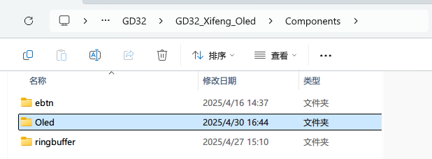
- 从上述 Github 仓库下载驱动文件（通常是一个 ZIP 压缩包）。
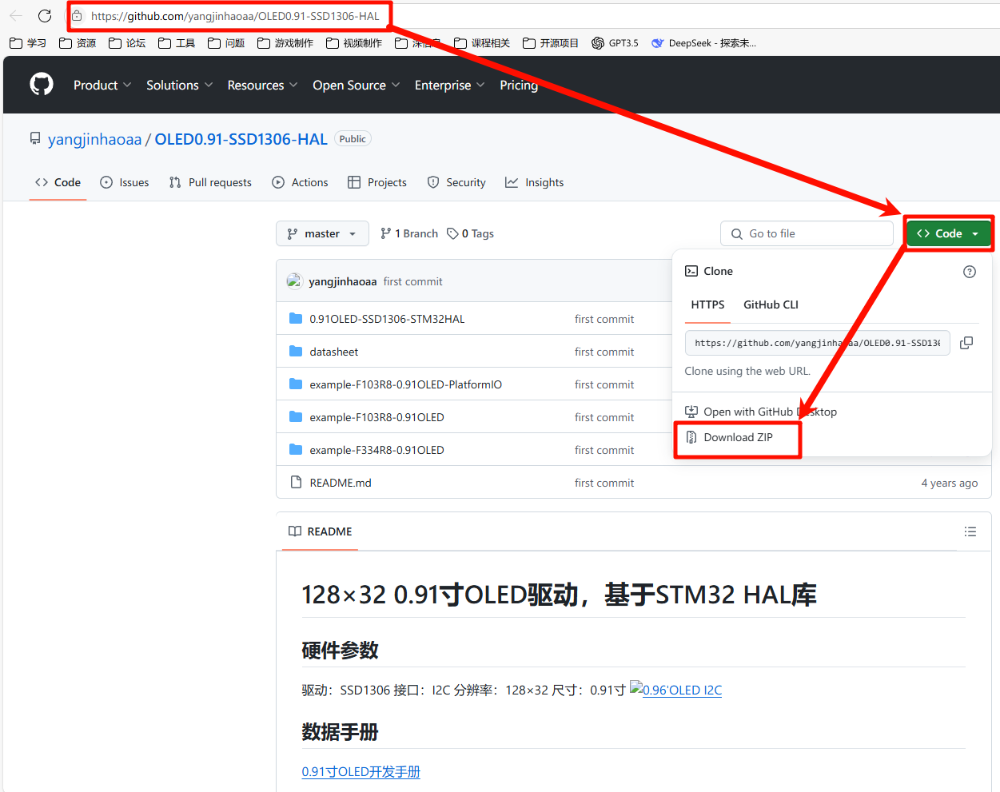
- 解压下载的文件。找到包含驱动源文件（如 `oled.c`, `oled.h`, `oledfont.h` 等）的文件夹（根据文档描述，可能是名为 `0.91OLED-SSD1306-STM32HAL` 的文件夹）。
- 将该文件夹中的所有 `.c` 和 `.h` 文件复制到你之前创建的 `Components/Oled` 文件夹中。
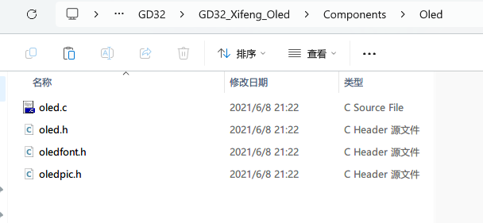
4.2 CubeMX 配置 I2C
- 确定引脚: 查阅你的开发板原理图或 OLED 模块说明，确定连接到 STM32 的 I2C SCL (时钟) 和 SDA (数据) 引脚。文档示例使用的是 PB8 (SCL) 和 PB9 (SDA)。
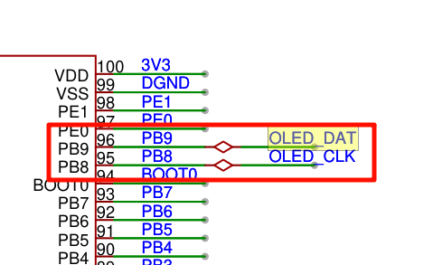
- 配置 CubeMX:
- 打开你的 CubeMX 工程。
- 在 Pinout & Configuration 视图中，找到对应的 I2C 外设 (例如 I2C1)。
- 将模式 (Mode) 设置为 `I2C`。
- 在下方的配置区域 (Configuration)，确认 I2C 的参数设置。标准模式 (Standard Mode) 速度 100kHz 或快速模式 (Fast Mode) 400kHz 通常都可以。其他参数可以暂时保持默认。
- 确保对应的 SCL 和 SDA 引脚已在右侧芯片图上正确分配给所选的 I2C 功能。
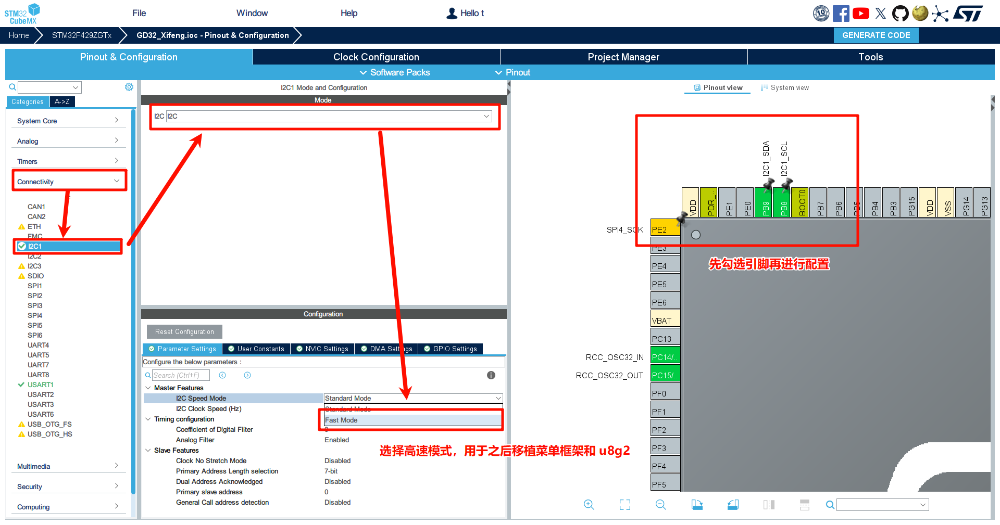
- 生成代码 (Generate Code)。
4.3 移植与配置驱动代码 (以 Keil MDK 为例)
- 添加文件到工程:
- 在 Keil 的 Project 窗口中，右键点击你的目标分组（或新建一个分组，如 `Components`），选择 "Add Existing Files to Group..."。
- 导航到 `Components/Oled` 文件夹，选择 `oled.c` 文件并添加。
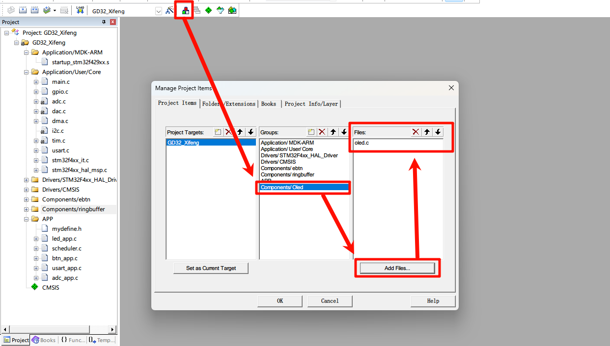
- 添加头文件路径:
- 点击魔术棒图标 (Options for Target)。
- 切换到 "C/C++" 选项卡。
- 在 "Include Paths" 旁边的文本框后面的 "..." 按钮点击。
- 添加 `Components/Oled` 文件夹的路径。
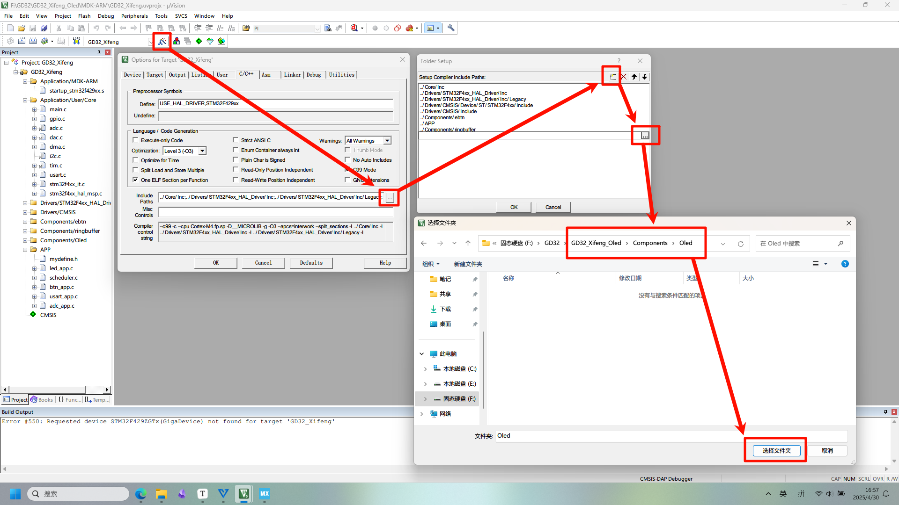
- 包含头文件: 在你项目的主要头文件（例如 `main.h` 或一个自定义的 `mydefine.h`）中，添加 `#include "oled.h"`。
- 修改 I2C 句柄: 打开 `oled.c` 文件。找到驱动代码中使用 I2C 发送函数的地方（通常是调用 `HAL_I2C_Mem_Write` 或类似函数）。将代码中使用的 I2C 句柄（文档示例中是 `&hi2c2`）修改为你项目中实际使用的 I2C 句柄（由 CubeMX 生成，例如 `&hi2c1`）。
// 在 oled.c 中找到类似的代码行并修改 // 原代码可能为: HAL_I2C_Mem_Write(&hi2c2, ...); // 修改为 (假设你用的是 I2C1): HAL_I2C_Mem_Write(&hi2c1, OLED_ADDRESS, memAddr, I2C_MEMADD_SIZE_8BIT, pData, size, 100); // ... (根据驱动库的具体实现调整)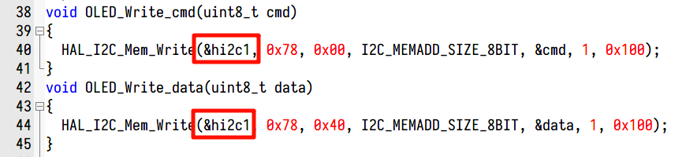
注意： 确保 `OLED_ADDRESS` 宏定义（通常在 `oled.h` 或 `oled.c` 中）与你的 OLED 模块实际地址匹配 (通常是 0x78 或 0x7A)。
4.4 创建应用层接口与任务
- 创建应用文件: 在你的应用代码文件夹（例如 `APP` 或 `Application`）中，创建 `oled_app.c` 和 `oled_app.h` 文件。将 `oled_app.c` 添加到 Keil 工程中。
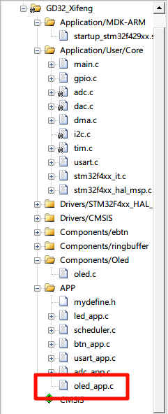
- 编写应用代码: 将文档中提供的 `oled_app.h` 和 `oled_app.c` 的内容复制到对应文件中。`Oled_Printf` 函数提供了一个方便的、类似 `printf` 的接口来在 OLED 上显示格式化字符串。`oled_task` 是一个示例任务，用于显示简单文本。
/* oled_app.h */ #ifndef __OLED_APP_H__ #define __OLED_APP_H__ #include "main.h" // 或者你的主要头文件 "mydefine.h" #include// 需要包含 stdarg.h 用于 va_list #include // 需要包含 stdio.h 用于 vsnprintf #include "oled.h" // 包含底层 OLED 驱动头文件 int Oled_Printf(uint8_t x, uint8_t y, const char *format, ...); void oled_task(void); #endif /* oled_app.c */ #include "oled_app.h" // 假设 OLED 宽度为 128 像素，使用 6x8 字体 // 每行 8 像素高，最多 64/8 = 8 行 (y=0~7) 或 32/8 = 4 行 (y=0~3) // 每列 6 像素宽，最多 128/6 = 21 个字符 (x=0~20? 驱动库可能基于像素位置) // **注意:** Oled_Printf 的 x, y 参数单位需要参考 OLED_ShowStr 实现，可能是字符位置或像素位置 // 文档中的注释 (0-127, 0-3) 暗示可能是 128x32 屏幕的像素 x 坐标和字符行 y 坐标 /** * @brief 使用类似printf的方式显示字符串，显示6x8大小的ASCII字符 * @param x 起始 X 坐标 (像素) 或 字符列位置 (需要看 OLED_ShowStr) * @param y 起始 Y 坐标 (像素) 或 字符行位置 (需要看 OLED_ShowStr, 0-3 或 0-7) * @param format, ... 格式化字符串及参数 * 例如：Oled_Printf(0, 0, "Data = %d", dat); **/ int Oled_Printf(uint8_t x, uint8_t y, const char *format, ...) { char buffer[128]; // 缓冲区大小根据需要调整 va_list arg; int len; va_start(arg, format); len = vsnprintf(buffer, sizeof(buffer), format, arg); va_end(arg); // 假设 OLED_ShowStr 使用像素坐标 x 和字符行 y // 并且字体大小是 8 (高度) OLED_ShowStr(x, y * 8, (uint8_t*)buffer, 8); // 将 buffer 转为 uint8_t* return len; } /* Oled 显示任务 */ void oled_task(void) { // 清屏通常是需要的，否则旧内容会保留 OLED_Cls(); Oled_Printf(0, 0, "Hello World!!!"); Oled_Printf(0, 2, "Welcome to MCU!"); // 刷新显示到屏幕 (如果驱动库需要) // OLED_Refresh_Gram(); // 取决于驱动库是否有显存刷新机制 } 注意： 上述 `Oled_Printf` 的实现假设 `OLED_ShowStr` 的 y 参数是像素坐标。如果 `OLED_ShowStr` 的 y 参数是字符行号，则调用应改为 `OLED_ShowStr(x, y, (uint8_t*)buffer, 8);`。请查阅你移植的 `oled.c` 中 `OLED_ShowStr` 函数的注释或实现来确认。同时，可能需要调用清屏函数 `OLED_Cls()` 和刷新函数（如果驱动库有缓冲区机制）。
- 包含应用头文件: 在你的主要头文件（例如 `main.h` 或 `mydefine.h`）中添加 `#include "oled_app.h"`。
4.5 集成与测试
- 调用初始化: 在 `main.c` 文件的 `main` 函数中，在 I2C 初始化 (`MX_I2C1_Init()`) 之后，调用 OLED 初始化函数。
// main.c int main(void) { // ... HAL_Init(), SystemClock_Config() ... MX_GPIO_Init(); MX_I2C1_Init(); // 确保 I2C 初始化在前 OLED_Init(); // 调用 OLED 初始化函数 // ... 其他初始化 ... while (1) { // ... 主循环 ... // 如果没有使用调度器，可以在这里直接调用 oled_task() // oled_task(); // HAL_Delay(100); // 添加延时避免过于频繁刷新 } } - 集成到任务调度器 (如果使用): 如果你使用了任务调度器（如文档中的 `scheduler.c`），将 `oled_task` 添加到任务列表中，并设置合适的执行周期（例如 100ms 或 500ms，取决于刷新需求）。
- 编译和下载: 编译整个工程，并将生成的目标文件下载到你的 STM32 开发板。
- 观察结果: 如果一切顺利，你的 OLED 屏幕应该会显示 "Hello World!!!" 和 "Welcome to MCU!"。
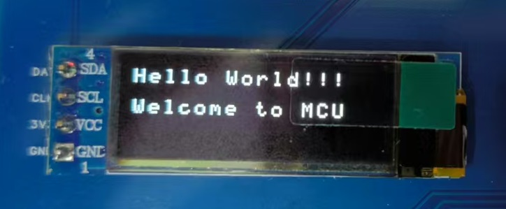
- 检查硬件连接： 确认 SCL, SDA, VCC, GND 连接牢固且正确。
- 检查 I2C 地址： 确认驱动代码中的 `OLED_ADDRESS` 与模块地址匹配。
- 检查 I2C 句柄： 确认 `oled.c` 中使用的 I2C 句柄 (`&hi2c1`?) 与 CubeMX 生成的一致。
- 使用 `HAL_I2C_IsDeviceReady`： 在 `OLED_Init()` 之前调用此函数检查设备是否响应。
- 查看 `OLED_Init()`： 确保初始化函数被成功调用。
- 确认 `Oled_Printf` 实现： 检查 `OLED_ShowStr` 的参数含义，调整 `Oled_Printf` 中的调用。
- 清屏与刷新： 确保在显示前调用了清屏函数，并在需要时调用了刷新函数（如果驱动库有缓冲区机制）。
🚀 5. 进阶：移植 u8g2 图形库
虽然基础的 SSD1306 驱动可以满足基本的文本和点线显示需求，但如果你想在 OLED 上绘制更复杂的图形、使用丰富的字体或者更方便地布局界面，强大的 u8g2 图形库 是一个绝佳的选择。
u8g2 是一个适用于嵌入式系统的单色显示屏图形库，支持多种控制器（包括 SSD1306）和通信接口。它提供了丰富的绘图 API（点、线、矩形、圆形、文本等）和大量的字体支持。相比简单的字符驱动，u8g2 使得创建图形化界面和显示复杂信息变得更加容易。
接下来，我们将根据参考文档，演示如何将 u8g2 移植到我们的 STM32 项目中（基于硬件 I2C）。移植的核心在于提供平台相关的底层接口函数，让 u8g2 库能够控制 GPIO（如果需要）并与显示屏进行通信。
5.1 准备文件
- 下载 u8g2 的 C 源码包 (通常在 Github Releases 页面)。
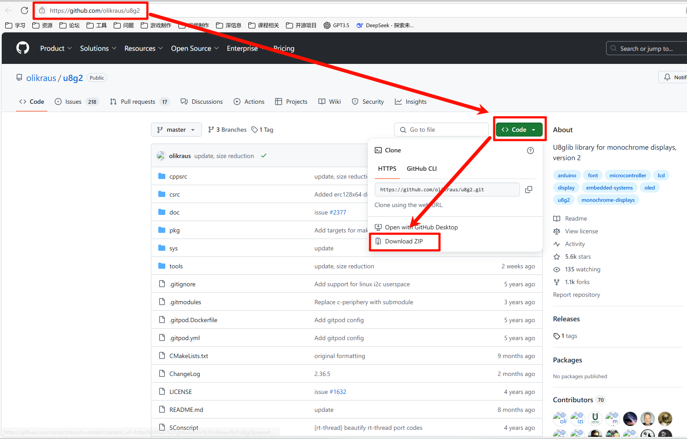
原因: u8g2 是一个开源库，我们需要将其源代码集成到我们的嵌入式项目固件中，而不是像在 PC 开发中那样链接动态库。因此，必须下载其 C 语言源文件。
- 解压文件，找到 `csrc` 文件夹。这个文件夹包含了 u8g2 库的核心代码和支持的各种显示驱动。为了显著减小最终编译后的代码体积（嵌入式系统资源有限），我们需要进行裁剪。根据你的 OLED 型号删除 `csrc` 目录中不需要的显示驱动文件 (`u8x8_d_*.c`)。参考文档以 0.91 寸 OLED (通常是 SSD1306 控制器, 128x32 分辨率) 为例，建议只保留与 SSD1306 相关的驱动文件，例如 `u8x8_d_ssd1306_128x32_univision.c` (文件名可能因 u8g2 版本略有不同，查找包含 `ssd1306` 和对应分辨率的文件)，删除其他所有 `u8x8_d_*.c` 文件。
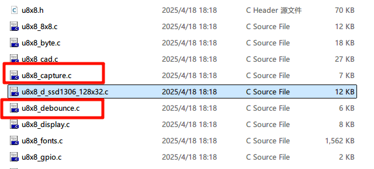
原因: 嵌入式系统通常 Flash (存储代码) 和 RAM (运行内存) 资源非常宝贵。u8g2 为了支持广泛的硬件，包含了大量驱动代码。将所有驱动都编译进项目会极大地浪费 Flash 空间。通过只保留我们实际使用的屏幕型号 (SSD1306, 128x32) 对应的驱动文件，可以有效减小固件大小。
- 修改 `u8g2_d_setup.c` 文件。此文件包含了针对不同显示屏、接口和缓冲模式的初始化设置函数 (`u8g2_Setup_...`)。同样为了精简，只保留与你选择的驱动和接口匹配的 setup 函数。参考文档示例针对 SSD1306、I2C 接口、128x32 分辨率，保留了 `u8g2_Setup_ssd1306_i2c_128x32_univision_f` ("f" 代表 full buffer 模式)。删除文件中其他的 `u8g2_Setup_...` 函数定义。
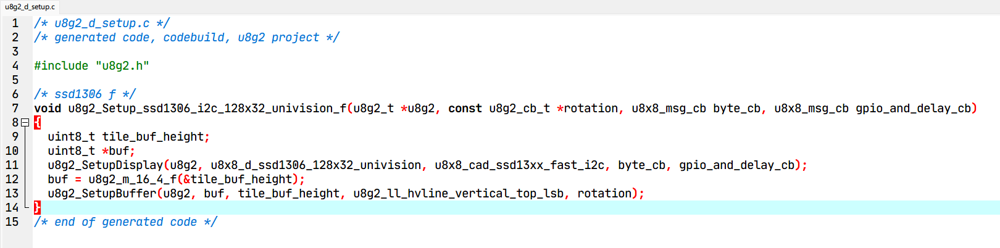
原因: 与驱动文件类似，`setup` 文件也包含了对应各种硬件组合的初始化代码。每个 `Setup` 函数都包含了特定的配置序列和对底层驱动、内存管理函数的调用。只保留与我们硬件 (SSD1306)、接口 (I2C)、分辨率 (128x32) 以及选择的缓冲模式 (Full Buffer 'f') 相匹配的那个 Setup 函数，可以进一步减小代码体积。
- 修改 `u8g2_d_memory.c` 文件。此文件包含不同缓冲区大小的内存管理函数 (`u8g2_m_...`)。你选择的 `Setup` 函数（上一步保留的）内部会调用一个特定的内存管理函数来分配显存缓冲区。例如，`u8g2_Setup_ssd1306_i2c_128x32_univision_f` 函数内部会调用 `u8g2_m_16_4_f`，这个函数名代表缓冲区大小：16 bytes/row * 4 rows = 64 bytes。对于 128x32 的屏幕，每个字节存 8 个像素，所以需要 128*32/8 = 512 bits = 64 bytes 的缓冲区，正好对应 `_16_4_` (16*8=128 像素宽，4*8=32 像素高)。为了节省空间，只保留这个被调用的内存函数 (`u8g2_m_16_4_f`)，删除其他 `u8g2_m_...` 函数定义。
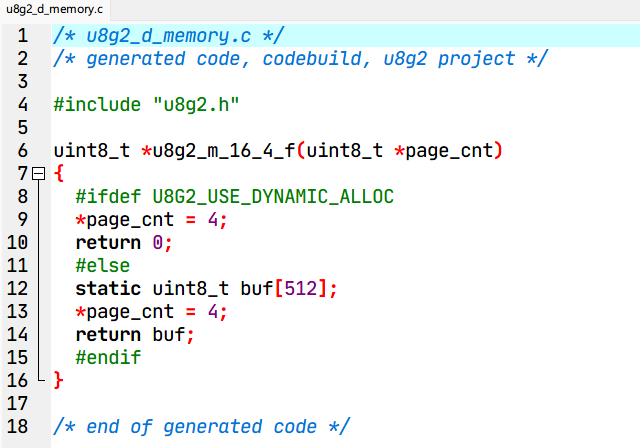
原因: 不同的缓冲模式（全缓冲、页缓冲）需要不同大小的 RAM 缓冲区。`memory.c` 文件提供了管理这些不同大小缓冲区的函数。由于我们已经确定使用全缓冲模式 (`_f` 后缀的 Setup 函数)，并且该 Setup 函数只会调用一个特定的内存管理函数 (`u8g2_m_16_4_f`)，因此其他内存管理函数都是冗余的，可以删除以节省 Flash。
- 在你的项目 `Components` 文件夹下创建一个 `u8g2` 子文件夹，并将经过上述裁剪处理后的 `csrc` 文件夹中的所有剩余 `.c` 和 `.h` 文件复制到 `Components/u8g2` 中。
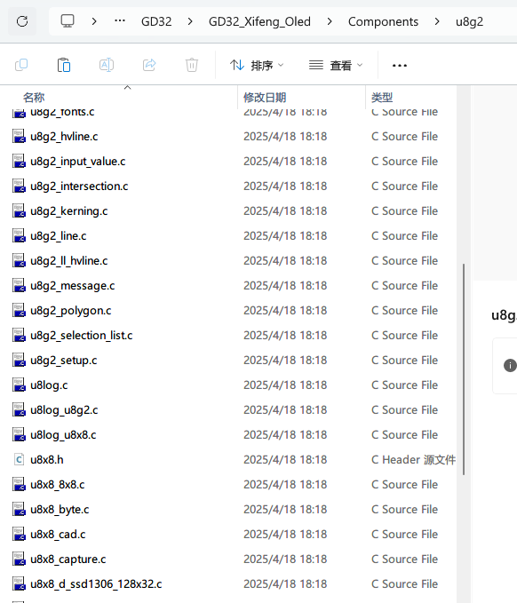
原因: 这是良好的项目组织习惯。将第三方库文件放在一个独立的目录（如 `Components/u8g2`）有助于保持项目结构的清晰，方便管理和未来的更新，避免与你自己的应用代码混淆。
5.2 引用文件 (以 Keil MDK 为例)
- 添加文件到工程:
- 在 Keil Project 窗口中，创建一个新分组 (如 `Components/u8g2`)。
- 右键点击该分组，选择 "Add Existing Files to Group..."。
- 导航到 `Components/u8g2` 文件夹，选择所有 `.c` 文件并添加。
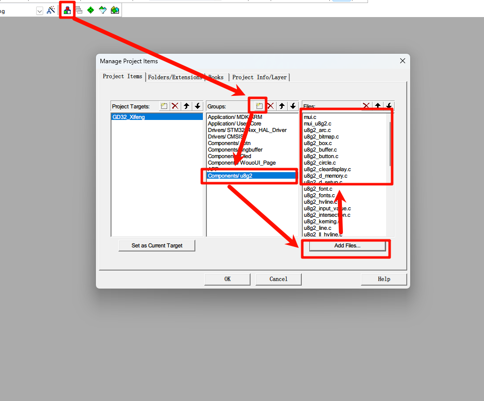
原因: 仅仅将源文件复制到项目文件夹是不够的。你需要告诉 IDE (如 Keil) 这些 `.c` 文件是项目的一部分，需要被编译器编译，并最终链接到可执行固件中。通过 "Add Existing Files..." 操作完成这一步。
- 添加头文件路径:
- 点击魔术棒 (Options for Target)。
- 切换到 "C/C++" 选项卡。
- 在 "Include Paths" 中添加 `Components/u8g2` 文件夹的路径。
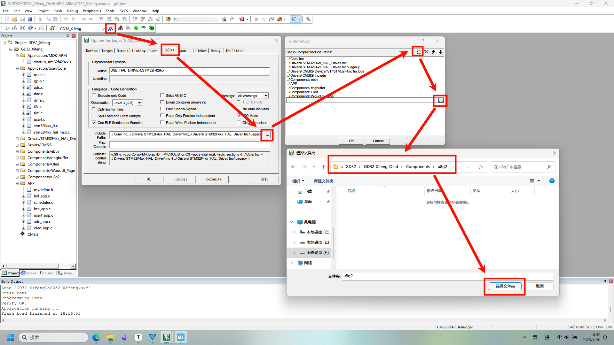
原因: 当你在自己的代码中 (如 `main.c` 或 `oled_app.c`) 写入 `#include "u8g2.h"` 时，编译器需要知道去哪里查找这个 `u8g2.h` 文件。通过在 "Include Paths" 中添加 `Components/u8g2` 路径，你告诉编译器在这个目录下搜索所需的头文件。
5.3 编写平台相关的回调函数
u8g2 通过回调函数与底层硬件交互（GPIO 控制和通信）。我们需要为 STM32 HAL 库实现这些回调函数。u8g2 将硬件交互分为两类：GPIO 及延时操作、字节传输操作（如 I2C, SPI）。我们需要根据选择的接口（这里是硬件 I2C）编写对应的回调函数。
原因: u8g2 库本身是平台无关的，它不知道你使用的是 STM32、ESP32 还是其他 MCU，也不知道你使用的是 HAL 库、LL 库还是寄存器操作。为了让 u8g2 能在你的特定平台上工作，你需要提供一组符合 u8g2 接口规范的回调函数，这些函数内部调用你平台（STM32 HAL）的 API 来完成实际的硬件操作（如 I2C 发送、延时等）。这是一种典型的硬件抽象层 (HAL) 或适配层 (Adapter) 的设计模式，实现了库与具体硬件的解耦。
参考 u8g2 官方移植指南 获取更详细的说明。
在你的项目（例如，可以放在 `oled_app.c` 或新建一个 `u8g2_port.c` 文件）中实现以下两个函数:
#include "u8g2.h"
#include "main.h" // 确保包含了 HAL 库和 I2C 定义
#include "i2c.h" // 确保包含 I2C 句柄定义 (例如 hi2c1)
// u8g2 的 GPIO 和延时回调函数
uint8_t u8g2_gpio_and_delay_stm32(u8x8_t *u8x8, uint8_t msg, uint8_t arg_int, void *arg_ptr)
{
switch(msg)
{
case U8X8_MSG_GPIO_AND_DELAY_INIT:
// 初始化 GPIO (如果需要，例如 SPI 的 CS, DC, RST 引脚)
// 对于硬件 I2C，这里通常不需要做什么
break;
case U8X8_MSG_DELAY_MILLI:
// 原因: u8g2 内部某些操作需要毫秒级的延时等待。
// 提供毫秒级延时，直接调用 HAL 库函数。
HAL_Delay(arg_int);
break;
case U8X8_MSG_DELAY_10MICRO:
// 原因: 某些通信协议或显示时序可能需要微秒级延时。
// 提供 10 微秒延时。HAL_Delay(1) 精度不够（通常是毫秒级）。
// 需要更精确的延时，可以使用 CPU NOP 指令或 DWT 定时器。
// 以下简单循环仅为示例，**需要根据你的 CPU 时钟频率精确调整循环次数**。
for (volatile uint32_t i = 0; i < 150; ++i) {} // 示例循环，计数需调整
break;
case U8X8_MSG_DELAY_100NANO:
// 原因: 更精密的时序控制，通常在高速接口或特定操作中需要。
// 提供 100 纳秒延时。非常短，通常用 NOP 指令实现。
// **同样需要根据 CPU 时钟频率调整 NOP 数量**。
__NOP(); __NOP(); __NOP(); // 示例 NOP
break;
case U8X8_MSG_GPIO_I2C_CLOCK: // [[fallthrough]] // Fallthrough 注释表示有意为之
case U8X8_MSG_GPIO_I2C_DATA:
// 控制 SCL/SDA 引脚电平。这些仅在**软件模拟 I2C** 时需要实现。
// 使用硬件 I2C 时，这些消息可以忽略，由 HAL 库处理。
break;
// --- 以下是 GPIO 相关的消息，主要用于按键输入或 SPI 控制 ---
// 如果你的 u8g2 应用需要读取按键或控制 SPI 引脚 (CS, DC, Reset)，
// 你需要在这里根据 msg 类型读取/设置对应的 GPIO 引脚状态。
// 对于仅使用硬件 I2C 显示的场景，可以像下面这样简单返回不支持。
case U8X8_MSG_GPIO_CS:
// SPI 片选控制
break;
case U8X8_MSG_GPIO_DC:
// SPI 数据/命令线控制
break;
case U8X8_MSG_GPIO_RESET:
// 显示屏复位引脚控制
break;
case U8X8_MSG_GPIO_MENU_SELECT:
u8x8_SetGPIOResult(u8x8, /* 读取选择键 GPIO 状态 */ 0);
break;
default:
u8x8_SetGPIOResult(u8x8, 1); // 不支持的消息
break;
}
return 1;
}
// u8g2 的硬件 I2C 通信回调函数
uint8_t u8x8_byte_hw_i2c(u8x8_t *u8x8, uint8_t msg, uint8_t arg_int, void *arg_ptr)
{
static uint8_t buffer[32]; // u8g2 每次传输最大 32 字节
static uint8_t buf_idx;
uint8_t *data;
switch(msg)
{
case U8X8_MSG_BYTE_SEND:
// 原因: u8g2 通常不会一次性发送大量数据，而是分块发送。
// 这个消息用于将一小块数据 (arg_int 字节) 从 u8g2 内部传递到我们的回调函数。
// 我们需要将这些数据暂存到本地 buffer 中，等待 START/END_TRANSFER 信号。
data = (uint8_t *)arg_ptr;
while( arg_int > 0 )
{
buffer[buf_idx++] = *data;
data++;
arg_int--;
}
break;
case U8X8_MSG_BYTE_INIT:
// 原因: 提供一个机会进行 I2C 外设的初始化。
// 初始化 I2C (通常在 main 函数中已完成)
// 由于我们在 main 函数中已经调用了 MX_I2C1_Init()，这里通常可以留空。
break;
case U8X8_MSG_BYTE_SET_DC:
// 原因: 这个消息用于 SPI 通信中控制 Data/Command 选择引脚。
// 设置数据/命令线 (I2C 不需要)
// I2C 通过特定的控制字节 (0x00 或 0x40) 区分命令和数据，因此该消息对于 I2C 无意义。
break;
case U8X8_MSG_BYTE_START_TRANSFER:
// 原因: 标记一个 I2C 传输序列的开始。
buf_idx = 0;
// 我们在这里重置本地缓冲区的索引，准备接收新的数据块。
break;
case U8X8_MSG_BYTE_END_TRANSFER:
// 原因: 标记一个 I2C 传输序列的结束。
// 此时，本地 buffer 中已经暂存了所有需要发送的数据块。
// 这是执行实际 I2C 发送操作的最佳时机。
// 发送缓冲区中的数据
// 注意: u8x8_GetI2CAddress(u8x8) 返回的是 7 位地址 * 2 = 8 位地址
if (HAL_I2C_Master_Transmit(&hi2c1, u8x8_GetI2CAddress(u8x8), buffer, buf_idx, 100) != HAL_OK)
{
return 0; // 发送失败
}
break;
default:
return 0;
}
return 1;
}注意：
- 请将上述代码中的 `&hi2c1` 替换为你实际使用的 I2C 句柄。
- 确保 `main.h` 或 `mydefine.h` 中包含了 `u8g2.h`。
- 如果你的回调函数放在单独的 `.c` 文件中，需要在头文件中声明它们，并在使用 u8g2 的地方包含该头文件。
- `U8X8_MSG_DELAY_10MICRO` 和 `U8X8_MSG_DELAY_100NANO` 的延时实现需要根据你的 MCU 时钟频率精确调整，或者使用 DWT 定时器等更精确的方法。简单的 `HAL_Delay(1)` 对于微秒级延时来说太长了。
5.4 初始化 u8g2
- 声明 u8g2 结构体: 在全局范围（例如 `oled_app.c` 或 `main.c`）声明一个 `u8g2_t` 类型的结构体变量。如果需要在多个文件访问，使用 `extern`。
原因: `u8g2_t` 结构体是 u8g2 库的核心，它包含了显示屏的配置信息、指向底层回调函数的指针、内部状态以及显存缓冲区（如果是缓冲模式）等所有信息。我们需要创建一个这个类型的实例，后续所有 u8g2 API 调用都需要传递这个实例的指针 (`&u8g2`)。声明为全局变量使得它可以在初始化代码 (`main.c`) 和显示任务代码 (`oled_app.c`) 中共享访问。如果定义在一个 `.c` 文件中，需要在其他需要访问它的文件中使用 `extern` 关键字声明。
// 在 oled_app.c 或 main.c #include "u8g2.h" u8g2_t u8g2; // 全局 u8g2 实例 // 如果在 oled_app.c 定义，在 oled_app.h 中声明: // extern u8g2_t u8g2;根据参考文档，如果在 `oled_task.c`（假设为 `oled_app.c`）中定义 `u8g2_t u8g2;`，则需要在 `mydefine.h`（或其他公共头文件）中添加 `extern u8g2_t u8g2;` 声明，以便 `main.c` 可以访问它进行初始化。
- 调用初始化函数: 在 `main.c` 的 `main` 函数中，替换掉之前 `OLED_Init()` 的调用，改为使用 u8g2 的初始化序列。这通常包括三个步骤：`setup`, `init display`, `set power save`。
原因: 初始化 u8g2 是一个标准流程，必须在使用任何绘图 API 之前完成：
- `u8g2_Setup_...()`: 这是配置的核心。它将 `u8g2_t` 结构体与具体的硬件驱动、通信方式（通过回调函数指针）和缓冲模式关联起来。必须选择与硬件和回调函数完全匹配的 Setup 函数，否则无法正确工作。
- `u8g2_InitDisplay()`: 这个函数会通过之前设置的回调函数，向 OLED 控制器 (SSD1306) 发送一系列初始化命令（类似于第 2.4 节描述的序列），配置其内部寄存器，使其准备好接收显示数据。
- `u8g2_SetPowerSave(0)`: SSD1306 初始化后可能处于省电模式（屏幕关闭）。调用这个函数并传入参数 0 会发送命令 (
0xAF) 来唤醒屏幕，使其正常显示。
// main.c #include "u8g2.h" #include "mydefine.h" // 假设 extern u8g2_t u8g2; 在这里，或者直接包含定义了 u8g2 的头文件 // 声明回调函数原型 (如果定义在其他 .c 文件) uint8_t u8g2_gpio_and_delay_stm32(u8x8_t *u8x8, uint8_t msg, uint8_t arg_int, void *arg_ptr); uint8_t u8x8_byte_hw_i2c(u8x8_t *u8x8, uint8_t msg, uint8_t arg_int, void *arg_ptr); int main(void) { // ... HAL_Init(), SystemClock_Config(), MX_GPIO_Init() ... MX_I2C1_Init(); // 确保 I2C 初始化在前 // u8g2 初始化 // 1. Setup: 这是最关键的一步，它配置了 u8g2 实例。 // - 选择与硬件匹配的 setup 函数 (SSD1306, I2C, 128x32, Full Buffer)。 // - &u8g2: 指向要配置的 u8g2 结构体实例的指针。 // - U8G2_R0: 旋转设置。U8G2_R0=0°, U8G2_R1=90°, U8G2_R2=180°, U8G2_R3=270°。 // - u8x8_byte_hw_i2c: 指向你的硬件 I2C 字节传输回调函数的指针。 // - u8g2_gpio_and_delay_stm32: 指向你的 GPIO 和延时回调函数的指针。 u8g2_Setup_ssd1306_i2c_128x32_univision_f(&u8g2, U8G2_R0, u8x8_byte_hw_i2c, u8g2_gpio_and_delay_stm32); // - &u8g2: u8g2 结构体指针 // - U8G2_R0: 旋转设置 (0度) // 2. Init Display: 发送初始化序列到 OLED u8g2_InitDisplay(&u8g2); // 3. Set Power Save: 唤醒屏幕。 // - 参数 0 表示关闭省电模式 (屏幕亮起)。 // - 参数 1 表示进入省电模式 (屏幕熄灭)。 u8g2_SetPowerSave(&u8g2, 0); // (可选) 4. Clear Display: 清空屏幕物理显存。 // - 这个函数会立即发送清屏命令到设备。 // - 注意与 `u8g2_ClearBuffer` 的区别，后者仅清空内存中的缓冲区。 // u8g2_ClearDisplay(&u8g2); // ... 其他初始化 ... while (1) { // ... 主循环 ... } }重要: 确保调用的 `u8g2_Setup_...` 函数与你在 5.1 步骤中保留的 setup 函数一致，并且与你的 OLED 屏幕型号 (SSD1306)、接口 (I2C)、分辨率 (128x32) 匹配。 `U8G2_R0` 表示无旋转，你可以根据需要选择 `U8G2_R1`, `U8G2_R2`, `U8G2_R3` 进行旋转。
5.5 测试 u8g2 显示
完成初始化后，就可以使用 u8g2 提供的丰富 API 来绘制图形和文本了。以下步骤展示了如何创建一个简单的显示任务并进行测试。
5.5.1 编写显示任务函数
修改之前的 `oled_task` 函数（或创建一个新的函数），用于执行具体的绘图操作。u8g2 (在全缓冲模式下) 的基本绘图流程如下：
- 清除缓冲区: 使用
u8g2_ClearBuffer()清空 MCU RAM 中的图形缓冲区。 - 执行绘图: 调用各种
u8g2_Draw...()函数（如绘制文本、线条、形状等）将内容绘制到缓冲区中。 - 发送缓冲区: 使用
u8g2_SendBuffer()将 RAM 缓冲区中的最终画面一次性通过 I2C 发送到 OLED 屏幕。
以下是一个示例任务代码：
// 在 oled_app.c (或包含 u8g2 定义的文件)
#include "u8g2.h"
#include "mydefine.h" // 确保包含 extern u8g2_t u8g2;
/* u8g2 显示任务示例 */
void oled_task(void) // 或者你定义的任务函数名
{
// --- 准备阶段 ---
// 设置绘图颜色 (对于单色屏，1 通常表示点亮像素)
u8g2_SetDrawColor(&u8g2, 1);
// 选择要使用的字体 (确保字体文件已添加到工程)
u8g2_SetFont(&u8g2, u8g2_font_ncenB08_tr); // ncenB08: 字体名, _tr: 透明背景
// --- 核心绘图流程 ---
// 1. 清除内存缓冲区 (非常重要，每次绘制新帧前必须调用)
u8g2_ClearBuffer(&u8g2);
// 2. 使用 u8g2 API 在缓冲区中绘图
// 所有绘图操作都作用于 RAM 中的缓冲区。
// 绘制字符串 (参数: u8g2实例, x坐标, y坐标, 字符串)
// y 坐标通常是字符串基线的位置。
u8g2_DrawStr(&u8g2, 2, 12, "Hello u8g2!"); // 从 (2, 12) 开始绘制
u8g2_DrawStr(&u8g2, 2, 28, "Micron Elec Studio"); // 绘制第二行
// 绘制图形 (示例：一个空心圆和一个实心框)
// 绘制圆 (参数: u8g2实例, 圆心x, 圆心y, 半径, 绘制选项)
u8g2_DrawCircle(&u8g2, 90, 19, 10, U8G2_DRAW_ALL); // U8G2_DRAW_ALL 画圆周
// 绘制实心框 (参数: u8g2实例, 左上角x, 左上角y, 宽度, 高度)
// u8g2_DrawBox(&u8g2, 50, 15, 20, 10);
// 绘制空心框 (参数: u8g2实例, 左上角x, 左上角y, 宽度, 高度)
// u8g2_DrawFrame(&u8g2, 50, 15, 20, 10);
// 3. 将缓冲区内容一次性发送到屏幕 (非常重要)
// 这个函数会调用我们之前编写的 I2C 回调函数，将整个缓冲区的数据发送出去。
u8g2_SendBuffer(&u8g2);
}
5.5.2 理解绘图流程与字体
流程:
u8g2_ClearBuffer(&u8g2);: 必须步骤。清空 RAM 缓冲区，为绘制新的一帧做准备。否则新内容会叠加在旧内容上。- (可选)
u8g2_Set...(): 设置绘图属性，如u8g2_SetFont()选择字体，u8g2_SetDrawColor()设置绘图颜色 (单色屏通常用 1)。 u8g2_Draw...(): 使用各种绘图函数（如 `u8g2_DrawStr`, `u8g2_DrawBox`, `u8g2_DrawLine`, `u8g2_DrawPixel` 等）在缓冲区中"作画"。坐标系原点 (0,0) 通常在左上角。u8g2_SendBuffer(&u8g2);: 必须步骤。将 RAM 缓冲区的内容通过底层 I2C (或 SPI) 回调函数发送到屏幕硬件，实际更新显示。
字体:
- u8g2 提供了极其丰富的字体库。
- 要使用某个字体，你需要从 u8g2 源码的 `tools/font/build/fonts` 目录中找到对应的字体
.c文件 (例如u8g2_font_ncenB08_tr.c)。 - 将这个字体
.c文件添加到你的 Keil (或其他 IDE) 工程中，就像添加其他源文件一样。 - 在代码中，使用
u8g2_SetFont(&u8g2, 字体名);(例如u8g2_SetFont(&u8g2, u8g2_font_ncenB08_tr);) 来启用该字体。后续的u8g2_DrawStr等函数就会使用这个字体进行渲染。 - 不同字体占用不同的 Flash 大小，选择时需要考虑资源限制。
5.5.3 集成与调用
确保你编写的 `oled_task` (或类似名称的) 函数被周期性调用。这可以通过以下方式实现：
- 在主循环中直接调用: 如果你的项目没有使用 RTOS 或任务调度器，可以在 `main.c` 的 `while(1)` 循环中直接调用
oled_task();，并加上适当的延时HAL_Delay(100);(例如 100ms 刷新一次)。 - 添加到任务调度器: 如果你使用了类似 `scheduler.c` 的简单调度器，将 `oled_task` 添加到任务列表，并设置合适的执行间隔。
- 创建 RTOS 任务: 如果使用了 FreeRTOS 等实时操作系统，创建一个专门用于 OLED 显示的任务，在该任务的循环中调用 `oled_task()` 并使用 OS 提供的延时函数 (如 `vTaskDelay`)。
5.5.4 编译、下载与观察
- 编译工程: 重新编译整个项目。原因: 将所有修改（包括添加的 u8g2 源文件、回调函数、字体文件和调用代码）转换成 MCU 可以执行的机器码。确保没有编译错误（特别是字体文件是否正确添加、函数调用是否匹配）。
- 下载程序: 将生成的可执行文件下载到你的 STM32 开发板。原因: 将编译好的固件烧录到 MCU 的 Flash 中。
- 观察结果: 如果一切顺利，你的 OLED 屏幕应该会根据 `oled_task` 函数中的绘图指令显示相应的文本和图形（例如参考文档中最后的那个圆圈示例图）。原因: 验证移植和测试代码是否成功。
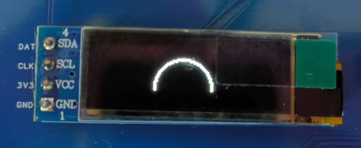
- 回调函数检查： 再次确认回调函数 (`u8g2_gpio_and_delay_stm32`, `u8x8_byte_hw_i2c`) 实现，特别是延时精度（虽然对于简单显示影响不大）和 `HAL_I2C_Master_Transmit` 调用中的 I2C 句柄、设备地址是否正确无误。可以尝试在回调函数中加入打印信息（如果使用了 UART）来调试。
- Setup 函数选择： 这是最常见的错误来源之一。务必确保 `u8g2_Setup_...` 函数的名字与你的硬件（SSD1306）、接口（I2C）、分辨率（128x32）以及缓冲模式（`_f` 代表全缓冲）完全匹配。
- 初始化顺序： 确保 `MX_I2C1_Init()` 在 `u8g2_Setup_...`, `u8g2_InitDisplay`, `u8g2_SetPowerSave` 之前被调用。
- 全局变量声明： 检查 `u8g2_t u8g2;` 是否在所有使用它的文件（包括 `main.c` 和 `oled_app.c`）中都可见（通过 `extern` 或放在公共头文件）。
- 缓冲区流程： 对于全缓冲模式，必须遵循 `ClearBuffer -> Draw... -> SendBuffer` 的流程。忘记 `ClearBuffer` 会导致画面重叠，忘记 `SendBuffer` 则屏幕无任何更新。
- 字体包含： 如果使用了特定字体 (`u8g2_SetFont`)，务必将对应的字体 `.c` 文件添加到 Keil 工程并重新编译。
- 内存/栈大小： 全缓冲模式会占用等于屏幕像素位数的 RAM (128x32 / 8 = 64 Bytes)。虽然不多，但要确保 MCU 有足够 RAM。同时检查调用 `oled_task` 的任务（如果是 RTOS）或主循环是否有足够的栈空间，因为 u8g2 函数调用和缓冲区也需要栈。
- I2C 地址确认： 再次核对 OLED 模块的实际 I2C 地址（通常是 0x78 或 0x7A），并确保 `u8x8_GetI2CAddress(&u8g2)` 返回的值是正确的 8 位地址。可以在 `u8x8_byte_hw_i2c` 回调中打印 `u8x8_GetI2CAddress(u8x8)` 的值来确认。
📑 6. 菜单系统：移植 WouoUI-Page
当需要在嵌入式项目中实现用户交互菜单时，一个结构良好、易于移植和使用的菜单框架能极大提高开发效率。WouoUI-Page (Github) 就是这样一款轻量级的嵌入式菜单框架。
主要特点 (根据参考文档):
- 移植方便: 所有核心文件都在一个文件夹内。
- 配置简单: 提供清晰易懂的配置文件 (`WouoUI_conf.h`)。
- 注释完善: 代码注释有助于理解。
- 配置项丰富: 可定制菜单外观和行为。
- 按键灵活: 易于与现有的按键检测逻辑集成。
本章节将详细介绍如何将 WouoUI-Page 移植到我们的项目中，假设你已经成功驱动了 OLED 显示屏 (例如使用第 4 节的基础驱动或第 5 节的 u8g2)。
6.1 准备文件
- 在项目的 `Components` 组件文件夹中，新建一个 `WouoUI_Page` 文件夹。
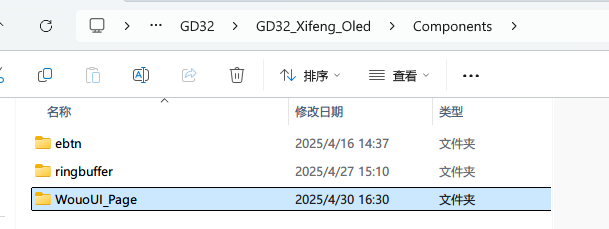
原因: 保持项目结构清晰，将第三方库文件与项目自身代码分离，便于管理和维护。
- 从 Github 仓库中下载源文件的压缩包。
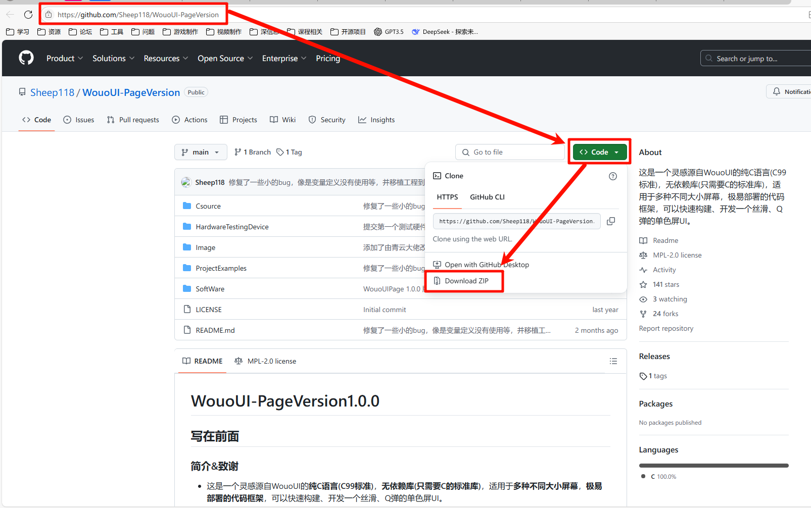
原因: 获取 WouoUI-Page 框架的源代码，以便将其集成到我们的固件中。
- 解压后将 `Csource` 文件夹中的所有 `.c` 和 `.h` 文件，全部复制到第一步创建的文件夹 `Components/WouoUI_Page` 中。
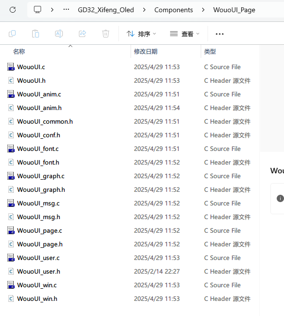
原因: 将框架的源文件放置到项目中指定的位置。参考文档建议使用其提供的修改版压缩包，可能已针对特定屏幕 (0.91 寸) 和编码 (GB2312) 进行了预配置，并包含示例菜单。
6.2 引用文件 (以 Keil MDK 为例)
- 添加文件到工程:
- 在 Keil Project 窗口中，创建一个新分组 (如 `Components/WouoUI_Page`)。
- 右键点击该分组，选择 "Add Existing Files to Group..."。
- 导航到 `Components/WouoUI_Page` 文件夹，选择所有 `.c` 文件并添加。
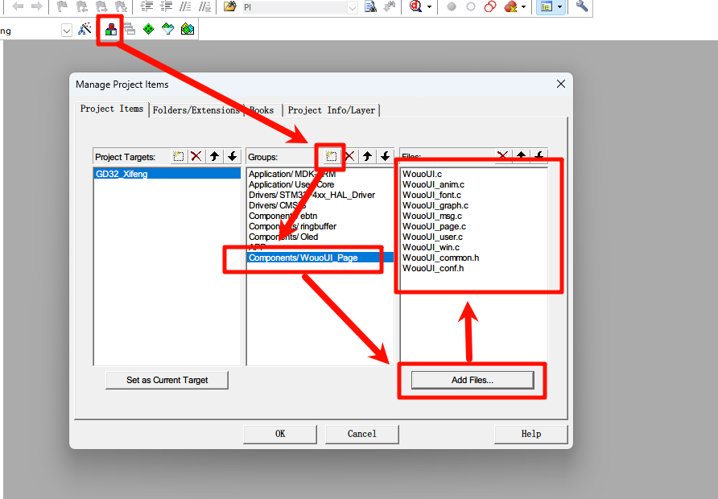
原因: 告知 IDE 需要编译这些 WouoUI-Page 的源文件，并将它们链接到最终的固件中。
- 添加头文件路径:
- 点击魔术棒 (Options for Target)。
- 切换到 "C/C++" 选项卡。
- 在 "Include Paths" 中添加 `Components/WouoUI_Page` 文件夹的路径。
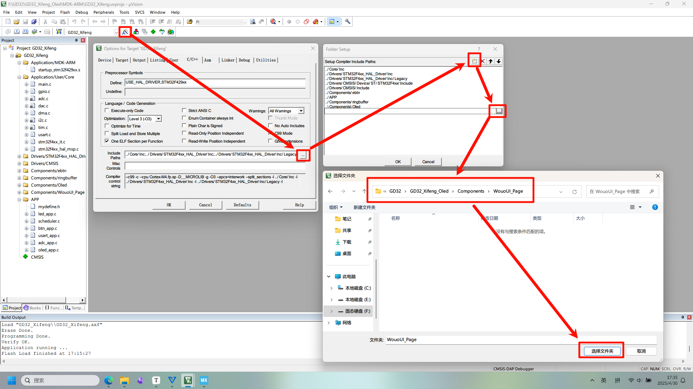
原因: 让编译器在处理 `#include "WouoUI.h"` 等指令时，能够找到这些头文件所在的目录。
6.3 实现缓存刷新函数
WouoUI-Page 菜单框架本身不直接操作硬件，它将绘制好的菜单界面存储在一个缓冲区中。你需要提供一个函数，该函数能接收这个缓冲区，并将其内容发送到 OLED 屏幕上显示出来。函数的接口由 WouoUI-Page 定义。
原因: 这是框架与具体显示驱动解耦的关键。WouoUI-Page 只负责生成菜单的像素数据，而如何将这些数据显示到屏幕上，则由用户提供的这个"刷新函数"决定。这样，WouoUI-Page 就可以适配各种不同的 OLED 驱动（如基础驱动、u8g2 驱动等）。
如果你使用的是本教程第 4 节介绍的基础 OLED 驱动，可以实现如下函数（假设屏幕是 128x32，即 4 页）：
#include "oled.h" // 假设你的基础驱动头文件是 oled.h
/**
* @brief 将 WouoUI 缓冲区的数据发送到 OLED 显示
* @param buff WouoUI 提供的缓冲区指针，大小为 [高度/8][宽度] 或 [4][128] for 128x32
*/
void OLED_SendBuff(uint8_t buff[4][128])
{
// 遍历每一页 (0-3)
for(uint8_t page = 0; page < 4; page++)
{
// 设置 OLED 的页地址
OLED_Write_cmd(0xb0 + page); // 0xB0 - 0xB3
// 设置 OLED 的列地址 (从第 0 列开始)
OLED_Write_cmd(0x00); // 低半字节列地址
OLED_Write_cmd(0x10); // 高半字节列地址 (0x10 | 0 = 0)
// 循环写入该页的 128 列数据
for (uint8_t column = 0; column < 128; column++)
{
// 从 WouoUI 缓冲区取数据，并通过基础驱动的数据写入函数发送
OLED_Write_data(buff[page][column]);
}
}
}
⚠️ 注意：此处的 `OLED_Write_cmd` 和 `OLED_Write_data` 是你基础 OLED 驱动库提供的函数，你需要根据实际情况调整。缓冲区 `buff` 的维度也需要与你的屏幕和 WouoUI 配置匹配。
6.4 配置菜单 (WouoUI_conf.h)
WouoUI-Page 的主要配置都在 `WouoUI_conf.h` 文件中完成。你需要根据你的硬件和需求修改这些配置。
原因: 这个配置文件允许你定制菜单的外观（屏幕尺寸、字体、图标、间距等）和行为，而无需修改框架的核心代码，提高了可维护性和易用性。
以下是针对 0.91 寸 (128x32) OLED 的一些关键配置修改示例（根据参考文档）：
- 屏幕尺寸适配: 修改宏定义以匹配你的屏幕分辨率。
/* WouoUI_conf.h - sekitar baris 14-15 */ //---------------------与UI相关的参数 #define WOUOUI_BUFF_WIDTH 128 // 屏幕宽 (保持 128) #define WOUOUI_BUFF_HEIGHT 32 // 屏幕高 (修改为 32)原因: 告诉框架它需要处理的画布大小，以便正确分配缓冲区和计算布局。
- 调整图标和磁贴样式: 参考文档建议修改一系列与磁贴（Tile）相关的参数，目的是在图标下方不显示标题磁贴（可能因为 32 像素高度空间不足）。
/* WouoUI_conf.h - sekitar baris 26-39 */ //------------------与title页面相关的默认参数 #define DEFAULT_TILE_B_TITLE_FNOT 0 // 磁贴大标题字体 (设置为 0 可能表示禁用或隐藏) #define DEFAULT_TILE_ICON_W 30 // 磁贴图标宽度 #define DEFAULT_TILE_ICON_H 30 // 磁贴图标高度 (接近屏幕高度) #define DEFAULT_TILE_ICON_IND_U 0 // 磁贴指示器与磁贴的上边距 #define DEFAULT_TILE_ICON_IND_D 2 // 磁贴指示器与磁贴的下边距 #define DEFAULT_TILE_ICON_IND_L 2 // 磁贴指示器与磁贴的左边距 #define DEFAULT_TILE_ICON_IND_R 2 // 磁贴指示器与磁贴的右边距 #define DEFAULT_TILE_ICON_IND_SL 5 // 磁贴指示器边长SideLength #define DEFAULT_TILE_ICON_S 6 // 磁贴图标间距(图标边和边的距离) #define DEFAULT_TILE_BAR_D 2 // 磁贴装饰条下边距 #define DEFAULT_TILE_BAR_W 0 // 磁贴装饰条宽度 (设置为 0 可能表示禁用) #define DEFAULT_TILE_BAR_H 0 // 磁贴装饰条高度 (设置为 0 可能表示禁用) #define DEFAULT_TILE_SLIDESTR_MODE 2 // 磁贴标题文本的滚动模式原因: 这些宏定义控制了主菜单界面（通常是图标或磁贴形式）的布局和元素尺寸。通过调整这些值，可以使菜单界面适应不同大小的屏幕并达到期望的视觉效果。将某些尺寸设为 0 通常是禁用对应元素的一种方式。
⚠️ 参考文档提示：将 `DEFAULT_TILE_B_TITLE_FNOT` 设置为 0 后，可能会导致编译错误。需要找到报错的语句（可能在 `WouoUI.c` 或相关文件中）并将其注释掉。原因: 这可能是因为代码中存在对字体 0 的无效引用或处理逻辑。注释掉相关代码是临时的解决方案，更好的方法是理解该配置项的意图并相应修改代码逻辑。
- 其他配置: `WouoUI_conf.h` 中还有许多其他配置项，例如字体选择、颜色（对单色屏意义不大但可能影响反显）、动画效果等，你可以根据需要进一步探索和调整。
6.5 初始化及调用
- 包含头文件: 在你的主要头文件（如 `main.h` 或 `mydefine.h`）中包含 WouoUI 的核心头文件和用户菜单定义头文件。
// mydefine.h 或 main.h #include "WouoUI.h" // WouoUI 核心框架 #include "WouoUI_user.h" // 用户自定义的菜单结构和回调函数 (通常需要用户创建或修改)原因: 使得你的代码能够调用 WouoUI 框架提供的函数，并能访问用户定义的菜单项。
- 修改 Oled 显示任务函数: 将你之前的 Oled 显示逻辑（例如 `oled_task`）替换为调用 WouoUI 的主处理函数 `WouoUI_Proc()`。
/* Oled 显示任务 (例如 oled_app.c) */ void oled_task(void) { // 调用 WouoUI 处理函数，参数为两次调用之间的间隔时间 (ms) // 这个函数会处理按键输入、更新菜单状态、绘制缓冲区 WouoUI_Proc(10); // 假设任务每 10ms 调用一次 }原因: `WouoUI_Proc()` 是菜单框架的"引擎"。你需要周期性地调用它，它会检查是否有按键消息、更新菜单状态（如高亮项、页面切换）、根据当前状态重新绘制菜单界面到内部缓冲区，并在需要时（状态变化后）调用你绑定的刷新函数来更新屏幕。传入的时间间隔参数有助于框架处理动画和定时事件。
💡 性能提示：如果 `WouoUI_Proc()` 执行时间较长或包含阻塞操作（如效率低的刷屏函数），可能会导致系统卡顿。参考文档建议可以将其放在定时器中断回调中执行（例如 10ms 定时中断），以保证固定的调用频率。但这需要注意中断服务程序应尽可能快地执行完毕。// 示例：在 TIM2 中断回调中调用 (需要先配置并启动 TIM2) void HAL_TIM_PeriodElapsedCallback(TIM_HandleTypeDef *htim) { if (htim->Instance == TIM2) // 确保是 TIM2 中断 { WouoUI_Proc(10); // 假设 TIM2 配置为 10ms 中断一次 } } // 在 main 函数中初始化后启动定时器中断 // HAL_TIM_Base_Start_IT(&htim2); - 在 main 函数中进行初始化: 在你的主函数 `main()` 中，执行 OLED 初始化之后，需要调用 WouoUI 的初始化相关函数。
// main.c #include "main.h" #include "oled.h" // 或 u8g2.h, 取决于你的显示驱动 #include "WouoUI.h" #include "WouoUI_user.h" // 假设你的缓存刷新函数是 OLED_SendBuff extern void OLED_SendBuff(uint8_t buff[4][128]); int main(void) { // ... 系统初始化 ... OLED_Init(); // 假设调用基础驱动的初始化 // 或者 u8g2 初始化序列... // --- WouoUI 初始化 --- // 1. 选择默认UI (如果 WouoUI_user.c 中定义了多个 UI 实例) WouoUI_SelectDefaultUI(); // 2. 绑定缓存刷新函数 (关键步骤) // 将你实现的 OLED_SendBuff 函数地址传递给 WouoUI 框架 WouoUI_AttachSendBuffFun(OLED_SendBuff); // 3. 初始化用户菜单 (执行 WouoUI_user.c/h 中定义的菜单结构初始化) TestUI_Init(); // 函数名取决于用户文件，通常是初始化页面、列表项等 // --- WouoUI 初始化完成 --- while (1) { // 如果不在中断中调用 WouoUI_Proc，可以在这里调用 // oled_task(); // HAL_Delay(10); // 配合 oled_task 中的 WouoUI_Proc(10) } }原因: 这是将 WouoUI 框架与你的系统连接起来的关键步骤：
- `WouoUI_SelectDefaultUI()`: （如果需要）选择要激活的菜单实例。
- `WouoUI_AttachSendBuffFun()`: **极其重要**。告诉 WouoUI 框架当它完成菜单绘制后，应该调用哪个函数 (`OLED_SendBuff`) 来将缓冲区内容刷新到屏幕上。
- `TestUI_Init()` (或类似名称): 执行用户定义的菜单初始化代码，这部分通常在 `WouoUI_user.c/h` 中实现，用于创建菜单页面、添加列表项、绑定回调函数等。没有这一步，菜单就是空的。
- 解决命名冲突 (如果需要): 参考文档提到，如果基础 OLED 驱动 (`oled.c`, `oledfont.h`) 中有与 WouoUI 库（或其依赖的库）冲突的名称（例如 `F8X16` 字体），需要重命名其中一个以解决冲突。例如，将驱动中的 `F8X16` 改为 `Oled_F8X16`。
原因: C 语言不允许在同一作用域内存在同名的函数或全局变量。如果两个不同的库使用了相同的名称，编译器会报错。重命名是解决此问题的常用方法。
- 编译下载观察: 完成以上步骤后，编译并下载固件。
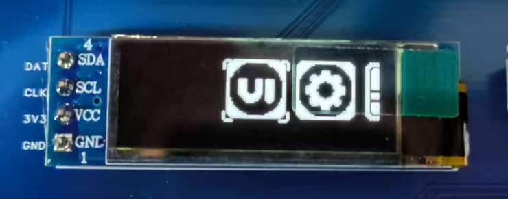
原因: 验证之前的配置和初始化是否正确。如果一切顺利，你应该能在 OLED 上看到 WouoUI-Page 的初始菜单界面。
6.6 绑定按键操作
菜单需要响应用户的按键输入（上、下、左、右、确认、返回等）才能进行导航和交互。WouoUI-Page 提供了一个消息队列机制来接收按键事件。
原因: WouoUI 框架本身不包含具体的按键驱动代码。它定义了一组标准的菜单操作消息 (`InputMsg` 枚举)。你需要将你项目中实际的按键事件（来自你的按键驱动，如 GPIO 中断、轮询检测、或者像 ebtn 这样的按键库）映射到这些标准消息，并通过 `WOUOUI_MSG_QUE_SEND()` 函数发送给 WouoUI 的消息队列。这样，`WouoUI_Proc()` 函数在执行时就能从队列中获取用户的操作意图，并更新菜单状态。
WouoUI 定义了以下消息类型 (`InputMsg`)：
typedef enum {
msg_up = 0x00, // 上移 / 上一个
msg_down, // 下移 / 下一个
msg_left, // 左移 / 上一个 (混合模式)
msg_right, // 右移 / 下一个 (混合模式)
msg_click, // 确认 / 点击
msg_return, // 返回 / 退出
msg_home, // 回主界面 (可能未完全实现)
msg_none = 0xFF, // 无操作
} InputMsg;
你需要在你的按键处理函数中，根据检测到的按键事件，调用 `WOUOUI_MSG_QUE_SEND()` 发送对应的消息。以下是使用 ebtn 按键库的示例（来自参考文档）：
#include "ebtn.h" // 假设使用了 ebtn 库
#include "WouoUI.h"
// ebtn 按键事件回调函数
void prv_btn_event(struct ebtn_btn *btn, ebtn_evt_t evt)
{
// 示例：假设 Button 0 按键单击事件对应菜单"上"操作
if ((btn->key_id == USER_BUTTON_0) && (evt == EBTN_EVT_CLICK))
{
// ... (你自己的其他按键处理，例如切换 LED) ...
// 发送"上"消息给 WouoUI
WOUOUI_MSG_QUE_SEND(msg_up);
}
// 示例：假设 Button 1 按键单击事件对应菜单"下"操作
if ((btn->key_id == USER_BUTTON_1) && (evt == EBTN_EVT_CLICK))
{
// ...
WOUOUI_MSG_QUE_SEND(msg_down);
}
// 示例：假设 Button 2 按键单击事件对应菜单"左"操作
if ((btn->key_id == USER_BUTTON_2) && (evt == EBTN_EVT_CLICK))
{
// ...
WOUOUI_MSG_QUE_SEND(msg_left);
}
// 示例：假设 Button 3 按键单击事件对应菜单"右"操作
if ((btn->key_id == USER_BUTTON_3) && (evt == EBTN_EVT_CLICK))
{
// ...
WOUOUI_MSG_QUE_SEND(msg_right);
}
// 示例：假设 Button 4 按键单击事件对应菜单"返回"操作
if ((btn->key_id == USER_BUTTON_4) && (evt == EBTN_EVT_CLICK))
{
// ...
WOUOUI_MSG_QUE_SEND(msg_return);
}
// 示例：假设 Button 5 按键单击事件对应菜单"确认"操作
if ((btn->key_id == USER_BUTTON_5) && (evt == EBTN_EVT_CLICK))
{
// ...
WOUOUI_MSG_QUE_SEND(msg_click);
}
// 可以添加对长按、双击等事件的处理，并映射到 WouoUI 消息
// if ((btn->key_id == USER_BUTTON_X) && (evt == EBTN_EVT_LONG_PRESS_START)) { ... }
}
编译下载后，你应该能够通过按键来控制菜单的上下移动、确认和返回等操作了。
6.7 使用 u8g2 提高刷新效率 (可选)
如果在实际使用中感觉菜单响应迟缓、不够流畅，尤其是在菜单切换或滚动时，这很可能是因为你在 6.3 节实现的 `OLED_SendBuff` 函数效率不高。
原因: 基础的 OLED 驱动通常是逐字节或逐页发送数据，并且每次发送前可能需要设置页地址和列地址，这涉及到多次 I2C 命令传输，相对耗时。而像 u8g2 这样的图形库，其底层通信回调 (`u8x8_byte_hw_i2c`) 通常经过优化，能够更高效地批量发送数据。此外，u8g2 的 `SendBuffer` 函数内部可能包含了更优化的传输策略。
如果你已经移植了 u8g2 (如第 5 节所述)，并且 WouoUI 的缓冲区大小与 u8g2 配置的缓冲区大小一致（例如都是 128x32 全缓冲），你可以修改 `OLED_SendBuff` 函数，使其利用 u8g2 的缓冲区和发送机制来提高效率。
前提:
- u8g2 已经成功初始化 (调用了 `u8g2_Setup_...`, `u8g2_InitDisplay`, `u8g2_SetPowerSave`)。
- WouoUI 和 u8g2 都配置为相同的屏幕尺寸和缓冲模式 (例如 128x32 全缓冲)。
修改后的 `OLED_SendBuff` 函数如下：
#include "u8g2.h" // 需要包含 u8g2 头文件
#include // 需要包含 string.h 以使用 memcpy
// 假设全局 u8g2 实例变量名为 u8g2
extern u8g2_t u8g2;
/**
* @brief 使用 u8g2 的缓冲区和发送函数来刷新 WouoUI 的内容
* @param buff WouoUI 提供的缓冲区指针，大小 [4][128] for 128x32
*/
void OLED_SendBuff(uint8_t buff[4][128])
{
// 1. 获取 u8g2 内部 RAM 缓冲区的指针
uint8_t *u8g2_buffer = u8g2_GetBufferPtr(&u8g2);
// 2. 将 WouoUI 缓冲区的内容完整地复制到 u8g2 的缓冲区中
// 注意：确保两个缓冲区大小完全一致 (4 * 128 bytes)
memcpy(u8g2_buffer, buff, 4 * 128);
// 3. 调用 u8g2 的发送函数，将 u8g2 缓冲区的内容发送到 OLED
// 这将使用 u8g2 配置的高效 I2C 回调函数来完成传输
u8g2_SendBuffer(&u8g2);
}
原因: 这个修改利用了 u8g2 可能更优化的底层 I2C/SPI 传输实现。通过 `memcpy` 将 WouoUI 生成的图像数据快速复制到 u8g2 的 RAM 缓冲区，然后调用 `u8g2_SendBuffer()`，让 u8g2 接管实际的硬件发送过程，从而可能获得更流畅的菜单体验。
编译下载这个修改后的版本，体验菜单的流畅度是否有所提升。
🎮 7. 实战：WouoUI-Page 应用开发指南
完成了 WouoUI-Page 库的底层移植后，现在我们来深入了解如何在应用层使用它来构建你的用户界面。本指南旨在帮助你快速上手。
7.1 基本概念
在开始编码之前，理解 WouoUI-Page 的几个核心概念非常重要：
- 页面 (Page): UI 的基本单元，可以是占据整个屏幕的全屏页面（如标题页
TitlePage, 列表页ListPage, 波形页WavePage），也可以是覆盖在当前页面之上的弹窗页面（如消息窗MsgWin, 确认窗ConfWin, 数值调节窗ValWin, 旋钮调节窗SpinWin, 列表选择窗ListWin）。每个页面都有其类型 (PageType) 和特定的处理逻辑。 - 选项 (Option): 页面上可供用户交互的元素。通常，一个页面的内容由一个
Option结构体数组定义。Option结构体包含了选项的显示文本 (text)、可能关联的内容字符串 (content)、关联的数值 (val) 等信息。text字符串的第一个字符往往具有特殊含义，决定了该选项的基本行为：-: 仅用作标题或分隔符，通常不可选中。+: 点击后通常用于跳转到另一个指定的页面。!: 点击后通常用于触发一个动作或弹出消息窗口。~: 点击后通常打开一个数值调节弹窗 (ValWin或SpinWin)，让用户修改此选项关联的val值。@: 用于创建一个二值（开/关）选择框，点击切换状态，状态通常也存储在val中 (0 或 1)。- (其他字符): 普通的可选中文本项。
- 消息 (InputMsg): 代表用户的输入操作，例如按键按下。WouoUI 定义了一组标准输入消息，如
msg_up(上),msg_down(下),msg_left(左),msg_right(右),msg_click(确认/点击),msg_return(返回)。你需要将你的硬件按键事件映射到这些消息。 - 回调函数 (CallBackFunc): 你可以为每个页面（全屏页或弹窗）绑定一个回调函数。当该页面处于活动状态并接收到用户输入消息时，这个回调函数就会被 WouoUI 框架自动调用。你可以在回调函数中编写该页面的具体响应逻辑，例如：根据用户点击的选项跳转到新页面、修改选项的值、弹出确认窗口、执行特定硬件操作等。回调函数的原型通常是
bool CallBackFunc(const Page *cur_page_addr, InputMsg msg)。
7.2 初始化 WouoUI
在你的应用程序启动代码中（例如 main 函数或专门的初始化函数），需要执行一系列步骤来初始化 WouoUI 框架，使其准备好工作。
// 假设在你的 Application_Init() 函数中
#include "WouoUI.h"
#include "WouoUI_user.h" // 必须包含你定义的菜单结构头文件
#include "oled.h" // 假设你的屏幕驱动接口在这里
// 假设你的屏幕刷新函数是这个 (已在移植部分实现)
extern void OLED_SendBuff(uint8_t buff[4][128]);
void Application_Init() {
// ... 其他硬件初始化代码 (GPIO, Clock, I2C, OLED Driver Init ...) ...
OLED_Init(); // 确保 OLED 驱动已初始化
// --- WouoUI 初始化序列 ---
// 1. 选择默认 UI 配置 (如果 WouoUI_user.c 中有多个 UI 定义，可选)
WouoUI_SelectDefaultUI();
// 2. 绑定屏幕刷新函数 (关键！)
// 将你实现的 `OLED_SendBuff` 函数指针传递给 WouoUI
WouoUI_AttachSendBuffFun(OLED_SendBuff);
// 3. 清空 WouoUI 内部缓冲区并首次发送到屏幕 (可选, 用于清屏)
// 这会确保屏幕初始状态是干净的
WouoUI_BuffClear(); // 清空 WouoUI 的 RAM 缓冲区
WouoUI_BuffSend(); // 调用 OLED_SendBuff 将空缓冲区刷到屏幕
// 4. 初始化你定义的所有 UI 页面 (关键！)
// 这会调用 WouoUI_user.c 中实现的 TestUI_Init() (或其他自定义名称) 函数
// 该函数负责创建所有页面实例、定义选项、绑定回调等
TestUI_Init();
// 5. 设置默认绘图颜色 (可选)
// 对于单色屏，1 通常代表前景色 (点亮的像素)
WouoUI_GraphSetPenColor(1);
// --- WouoUI 初始化完成 ---
}
关键点解释:
- `WouoUI_AttachSendBuffFun(OLED_SendBuff)`: 这是连接 WouoUI 内部渲染结果和你实际屏幕显示驱动的桥梁，必须正确设置。
- `TestUI_Init()`: 这个函数通常在 `WouoUI_user.c` 中实现，是你定义整个 UI 结构的核心。没有它，菜单就是空的。
7.3 创建页面 (以列表页为例)
创建 UI 界面的主要工作通常在 `WouoUI_user.c` 和 `WouoUI_user.h` 文件中完成。你需要定义页面对象、选项数组，并编写回调函数来处理交互。
步骤 1: 定义页面对象和选项数组 (通常在 .h 或 .c 文件顶部)
// WouoUI_user.h 或 WouoUI_user.c
#include "WouoUI.h"
// --- 定义页面实例 ---
// 假设我们有一个主页面 (main_page) 和一个列表设置页面 (settings_list_page)
extern TitlePage main_page; // 主页面可能是磁贴类型 (TitlePage)
extern ListPage settings_list_page; // 设置页面是列表类型 (ListPage)
// --- 定义设置页面的选项 ---
// Option 结构体数组定义了列表页的内容和行为
Option settings_options[] = {
{.text = (char*)"- Settings Menu"}, // 标题项，不可选
{.text = (char*)"! Beep On/Off"}, // 点击触发动作 (通过回调处理)
{.text = (char*)"~ Brightness", .val=80}, // 点击打开数值调节弹窗, 初始值80
{.text = (char*)"@ Auto Save", .val=1}, // 二值选择框，初始值为 1 (开)
{.text = (char*)"+ About"}, // 点击跳转到 "About" 页面
{.text = (char*)"-"}, // 分隔符
{.text = (char*)"< Back to Main"}, // 返回项 (也可以用 '+' 跳转或在回调处理返回)
};
// 计算选项数量 (C 语言常用技巧)
#define SETTINGS_OPTIONS_NUM (sizeof(settings_options) / sizeof(Option))
// --- 定义共用的弹窗页面实例 (可选, 推荐) ---
// 定义一些通用的弹窗实例，可以在多个页面中复用
extern MsgWin common_msg_page; // 用于显示提示信息
extern ConfWin common_conf_page; // 用于显示确认对话框
extern ValWin common_val_page; // 用于调节数值
步骤 2: 定义页面的回调函数 (在 .c 文件中)
回调函数是处理页面交互逻辑的核心。
// WouoUI_user.c
#include "WouoUI_user.h"
// --- 设置列表页面的回调函数 ---
// 当 settings_list_page 活动时，发生按键输入会调用此函数
bool SettingsListPage_CallBack(const Page *cur_page_addr, InputMsg msg) {
// 检查是否是 "确认/点击" 消息
if (msg == msg_click) {
// 获取当前光标选中的是哪个选项
Option* selected_option = WouoUI_ListTitlePageGetSelectOpt(cur_page_addr);
// --- 根据选中的选项文本执行不同操作 ---
if (strcmp(selected_option->text, "! Beep On/Off") == 0) {
// 切换蜂鸣器状态 (假设有 Beep_Toggle() 函数)
// Beep_Toggle();
// (可选) 弹出提示消息
WouoUI_MsgWinPageSetContent(&common_msg_page, (char*)"Beep Toggled!");
WouoUI_JumpToPage((PageAddr)cur_page_addr, &common_msg_page); // 跳转到消息弹窗
return true; // 返回 true 表示消息已处理
}
else if (strcmp(selected_option->text, "~ Brightness") == 0) {
// 用户点击了亮度调节项，WouoUI 会自动处理跳转到 ValWin
// 因为选项文本以 '~' 开头。
// 我们可以在 ValWin 的回调中获取最终调节的值，或者让它自动写回
// (如果 ValWin 初始化时 auto_set_bg_opt 设置为 true)
// (可选) 在跳转前，可以预设 ValWin 的参数
WouoUI_ValWinPageSetMinStepMax(&common_val_page, 0, 5, 100); // 设置范围 0-100, 步长 5
// 注意：跳转是自动的，无需手动调用 WouoUI_JumpToPage
}
else if (strcmp(selected_option->text, "@ Auto Save") == 0) {
// 用户点击了自动保存选项，WouoUI 会自动切换 val 的值 (0/1)
// 并更新界面上的勾选框状态。
// 我们可以在这里读取切换后的值 selected_option->val 来执行实际操作
// Apply_AutoSave_Setting(selected_option->val);
return true; // 消息已处理
}
else if (strcmp(selected_option->text, "+ About") == 0) {
// 用户点击了跳转项，WouoUI 会自动跳转到 'about_page'
// (前提是 about_page 已经在 TestUI_Init 中正确初始化)
// 跳转是自动的，无需手动调用 WouoUI_JumpToPage
}
else if (strcmp(selected_option->text, "< Back to Main") == 0) {
// 手动跳转回主页面
WouoUI_JumpToPage((PageAddr)cur_page_addr, &main_page);
return true; // 消息已处理
}
}
// 检查是否是 "返回" 消息
else if (msg == msg_return) {
// 在列表页按返回键，跳转回主页面
WouoUI_JumpToPage((PageAddr)cur_page_addr, &main_page);
return true; // 返回 true 阻止 WouoUI 的默认返回处理 (如果有)
}
// 如果这个回调函数没有完全处理该消息 (例如上下移动 msg_up/down),
// 返回 false，让 WouoUI 继续执行其默认处理 (如列表滚动)
return false;
}
步骤 3: 在 TestUI_Init() 中初始化页面 (在 .c 文件中)
TestUI_Init 函数负责创建所有页面实例，并将它们连接起来。
// WouoUI_user.c
// --- 定义页面和弹窗的实例变量 ---
// (这些变量需要与 .h 文件中的 extern 声明对应)
TitlePage main_page;
ListPage settings_list_page;
// ... 其他页面 ...
MsgWin common_msg_page;
ConfWin common_conf_page;
ValWin common_val_page;
// --- TestUI_Init 函数 ---
void TestUI_Init() {
// (可选) 在这里修改全局 UI 参数，例如动画速度
// g_default_ui_para.ani_param[LIST_ANI] = 300; // 减慢列表动画
// --- 初始化主页面 (假设是磁贴类型) ---
// WouoUI_TitlePageInit(&main_page, MAIN_OPTIONS_NUM, main_options, Setting_loop, MainPage_CallBack);
// (需要先定义 main_options 和 MainPage_CallBack)
// --- 初始化设置列表页面 ---
// 参数: 页面实例指针, 选项数量, 选项数组指针, 页面设置(如循环滚动), 回调函数指针
WouoUI_ListPageInit(&settings_list_page, SETTINGS_OPTIONS_NUM, settings_options, Setting_loop, SettingsListPage_CallBack);
// --- 初始化其他页面 (例如 About 页面) ---
// WouoUI_XXXPageInit(&about_page, ...);
// --- 初始化共用的弹窗页面 ---
// 这些弹窗通常只需要初始化一次，然后在需要时通过设置内容和跳转来使用
// 消息弹窗: 标题 null, 不模糊背景, 显示 2 秒自动返回, 无回调
WouoUI_MsgWinPageInit(&common_msg_page, NULL, false, 2000, NULL);
// 确认弹窗: 标题 null, 模糊背景, 阻塞(需用户选Yes/No), 有回调处理结果
WouoUI_ConfWinPageInit(&common_conf_page, NULL, true, true, CommonConfPage_CallBack);
// 数值弹窗: 标题 null, 默认值0, 范围0-100, 步长1, 自动写回背景选项, 循环, 无回调
WouoUI_ValWinPageInit(&common_val_page, NULL, 0, 0, 100, 1, true, true, NULL);
// ... 初始化其他弹窗 ...
// --- 设置 UI 的主页/起始页 ---
// 告诉 WouoUI 哪个页面是应用程序启动时或按 Home 键时应该显示的页面
p_cur_ui->home_page = &main_page; // 将 main_page 设为主页
// --- 设置共用弹窗页面 ---
// 将之前初始化的共用弹窗实例地址告诉 WouoUI 框架
// 这样当选项文本以 '!', '~' 等开头时，框架知道跳转到哪个弹窗
p_cur_ui->msg_win = &common_msg_page;
p_cur_ui->val_win = &common_val_page;
p_cur_ui->conf_win = &common_conf_page;
// ... 设置其他共用弹窗 ...
}
7.4 页面跳转
页面之间的切换主要通过 WouoUI_JumpToPage(PageAddr self_page, PageAddr terminate_page) 函数实现。
self_page: 当前页面的地址。在回调函数中，通常传入其第一个参数cur_page_addr。terminate_page: 要跳转到的目标页面的地址（例如&settings_list_page,&common_msg_page）。
跳转可以在回调函数中根据用户操作显式调用，或者由 WouoUI 根据选项文本的特殊前缀（如 `+`, `~`, `!`）自动触发。
// 在某个回调函数中，根据条件跳转到设置页面
if (user_action == GO_TO_SETTINGS) {
WouoUI_JumpToPage((PageAddr)cur_page_addr, &settings_list_page);
}
7.5 处理用户输入
- 自动处理: 对于列表页 (
ListPage) 和磁贴页 (TitlePage)，WouoUI 会自动处理msg_up和msg_down消息，实现光标的上下移动（如果设置了循环模式Setting_loop，则会循环滚动）。 - 回调函数处理: 你需要在页面的回调函数中捕获关键的交互消息，主要是
msg_click(确认) 和msg_return(返回)，并根据当前选中的选项执行相应逻辑。 - 获取选中项: 在列表页或磁贴页的回调函数中，使用
WouoUI_ListTitlePageGetSelectOpt(cur_page_addr)函数可以获取当前光标所在的Option结构体的指针，从而访问其text,val等成员。 - 消息传递: 确保你的按键驱动（或中断处理）能够将按键事件转换为正确的
InputMsg，并使用WOUOUI_MSG_QUE_SEND(msg)发送到 WouoUI 的消息队列。
7.6 使用弹窗
弹窗是覆盖在当前页面之上的临时页面，用于显示信息、获取用户确认或输入。
- 定义与初始化: 如 7.3 节所示，在 `WouoUI_user.c/h` 中定义弹窗页面实例 (
MsgWin,ConfWin,ValWin等)，并在 `TestUI_Init()` 中调用对应的 `WouoUI_XXXWinPageInit()` 函数进行初始化。通常建议将常用的弹窗设为共用实例 (如 `common_msg_page`)，并在 `TestUI_Init` 中通过 `p_cur_ui->msg_win = &common_msg_page;` 等方式将其注册到框架。 - 触发弹窗:
- 自动触发: 如果列表项文本以特定字符开头（如
!对应 `MsgWin` 或 `ConfWin`，~对应 `ValWin` 或 `SpinWin`，@触发内置逻辑），WouoUI 会自动跳转到注册的共用弹窗页面。 - 手动触发: 在任何页面的回调函数中，可以通过调用
WouoUI_JumpToPage((PageAddr)cur_page_addr, &my_specific_popup_page);来跳转到任何已初始化的弹窗页面。
- 自动触发: 如果列表项文本以特定字符开头（如
- 配置弹窗内容/行为 (跳转前): 在手动跳转到弹窗前，通常需要设置其内容或参数：
WouoUI_MsgWinPageSetContent(&common_msg_page, "Action Done!");设置消息内容。WouoUI_ConfWinPageSetContent(&common_conf_page, "Save Changes?");设置确认框的提示文本。WouoUI_ValWinPageSetMinStepMax(&common_val_page, 0, 10, 100);设置数值调节范围和步长。WouoUI_ValWinPageSetCurVal(&common_val_page, current_value);设置数值调节的初始值。
- 处理弹窗结果:
- MsgWin: 通常用于显示信息，可设置显示一段时间后自动返回 (`auto_ret_time` 参数)。
- ConfWin: 如果设置了回调函数，可以在回调函数中检查
conf_ret成员 (true为 Yes,false为 No) 来获取用户的选择。 - ValWin / SpinWin:
- 如果初始化时设置了
auto_set_bg_opt = true，弹窗关闭时会自动将用户调节好的值写回触发它的那个列表选项的val成员。 - 也可以在弹窗的回调函数中，通过访问页面结构体的
val成员获取最终值。
- 如果初始化时设置了
- ListWin: 在回调函数中检查
sel_str_index获取用户选择的列表项索引。
7.7 配置 UI 参数 (进阶)
可以通过修改全局结构体变量 g_default_ui_para 中的成员来调整 UI 的一些默认视觉和行为参数。这些修改通常放在 TestUI_Init() 函数的开头，页面初始化之前。
// 在 TestUI_Init() 开头
void TestUI_Init() {
// 示例：加快列表动画速度 (数值越小越快)
g_default_ui_para.ani_param[LIST_ANI] = 150;
// 示例：禁用列表页的循环滚动模式
g_default_ui_para.loop_param[LIST_LOOP] = 0; // 0 表示禁用
// 示例：修改弹窗背景模糊程度 (数值越大越模糊?)
g_default_ui_para.blur_param = 5;
// ... 然后开始初始化页面 ...
// WouoUI_ListPageInit(...);
}
可配置的参数包括动画速度、循环模式、各种边距、字体、颜色、模糊效果等，具体可查阅 `WouoUI_common.h` 中 UI_Params 结构体的定义。
7.8 主循环集成
在你的应用程序主循环 (例如 `main` 函数的 `while(1)` 或 RTOS 任务循环) 中，需要确保以下几点：
- 获取用户输入: 持续检测按键状态（或其他输入方式）。
- 发送消息: 当检测到有效的用户操作时，将其转换为对应的
InputMsg，并使用WOUOUI_MSG_QUE_SEND(msg)发送给 WouoUI。 - 处理 UI: 周期性地调用
WouoUI_Proc(delta_time)函数。delta_time是两次调用之间经过的时间（毫秒），用于动画和时间相关的处理。
#include "WouoUI.h"
#include "key_driver.h" // 假设你的按键驱动接口在这里
#include "timing.h" // 假设你的计时函数在这里
uint32_t last_tick = 0; // 用于计算时间间隔
int main(void) {
// ... 系统初始化 ...
Application_Init(); // 执行之前的 WouoUI 和硬件初始化
last_tick = Get_System_Millis(); // 获取初始时间
while (1) {
// --- 1. 获取用户输入 ---
InputMsg current_msg = Get_Mapped_UserInput(); // 返回 WouoUI 定义的 InputMsg
// --- 2. 发送消息 ---
if (current_msg != msg_none) {
WOUOUI_MSG_QUE_SEND(current_msg);
}
// --- 3. 计算时间间隔 ---
uint32_t current_tick = Get_System_Millis();
uint16_t delta_time = current_tick - last_tick;
// 防止时间戳回绕或 delta_time 过大 (根据实际情况调整阈值)
if (delta_time == 0 || delta_time > 500) {
delta_time = 10; // 提供一个默认或最小间隔
}
last_tick = current_tick;
// --- 4. 处理 UI ---
// 可以直接在主循环调用，也可以如前所述放在定时中断或任务中
WouoUI_Proc(delta_time);
// ... 其他主循环任务 ...
}
}
// --- 示例：按键输入映射函数 ---
InputMsg Get_Mapped_UserInput() {
if (Is_KeyUp_Pressed_Event()) return msg_up;
if (Is_KeyDown_Pressed_Event()) return msg_down;
if (Is_KeyLeft_Pressed_Event()) return msg_left;
if (Is_KeyRight_Pressed_Event()) return msg_right;
if (Is_KeyConfirm_Pressed_Event()) return msg_click;
if (Is_KeyBack_Pressed_Event()) return msg_return;
return msg_none; // 没有有效按键事件
}
7.9 简单示例回顾
结合以上步骤，一个最简单的应用流程如下：
- 硬件和 WouoUI 初始化: 在 `Application_Init()` 中完成屏幕驱动初始化、绑定 `OLED_SendBuff`、调用 `TestUI_Init`。
- 定义页面和选项: 在 `WouoUI_user.c/.h` 中定义你的页面实例（如 `main_page`, `settings_list_page`）、选项数组 (
Option settings_options[] = {...}) 和页面回调函数 (SettingsListPage_CallBack)。 - 初始化页面: 在 `WouoUI_user.c` 的 `TestUI_Init()` 函数中，调用 `WouoUI_ListPageInit()`, `WouoUI_TitlePageInit()` 等函数创建页面实例，设置主页，注册共用弹窗。
- 主循环:
- 检测按键输入 -> `Get_Mapped_UserInput()`
- 发送 WouoUI 消息 -> `WOUOUI_MSG_QUE_SEND()`
- 处理 UI 状态和渲染 -> `WouoUI_Proc()`
- 页面逻辑: 在页面的回调函数中，响应 `msg_click` 和 `msg_return`，根据选中的选项 `WouoUI_ListTitlePageGetSelectOpt()`，使用 `WouoUI_JumpToPage()` 进行页面切换或弹出窗口，或者执行其他应用逻辑。
希望这份详细的应用开发指南能帮助你更好地使用 WouoUI-Page 框架构建嵌入式菜单系统！如有疑问，请仔细阅读 WouoUI 源码中的注释，并参考其提供的 `WouoUI_user.c` 示例代码。